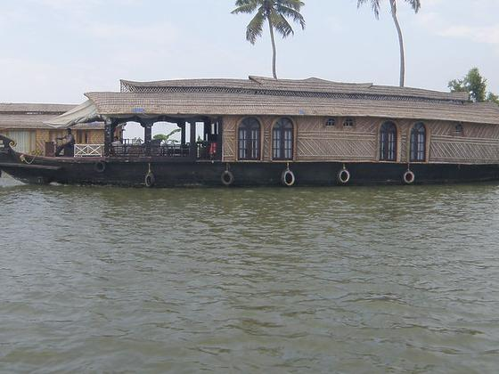
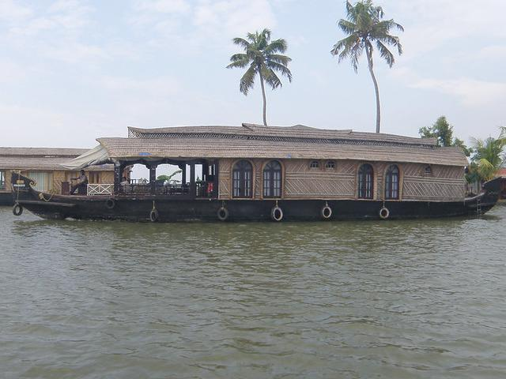
tags:
reason: Candidate B includes both palm trees fully, creating a more balanced and symmetrical composition that frames the houseboat naturally. The wider framing preserves the full length of the boat and its context without cutting off key elements (e.g., the stern is visible in B but partially cropped in A). Lighting and texture are consistent and natural in both, but B’s improved spatial balance and inclusion of environmental context enhance visual storytelling without introducing artifacts or distortion.
notes: FCDB ranking pair. photo_id=5123207448, pair_index=8, source_votes=3, edit_votes=2. source=crop_0, edit=crop_1, preference_strength=weak.


tags:
reason: Candidate B improves composition by including more of the left tree, creating stronger framing symmetry and visual balance. The wider view enhances depth and context without sacrificing subject clarity—the two people on the bench remain well-placed and identifiable. Lighting and texture are consistent and natural in both, but B’s framing better utilizes the foreground trees as leading elements toward the horizon, reinforcing the serene lakeside mood. Candidate A crops too tightly on the left, losing part of the framing tree and reducing environmental storytelling.
notes: FCDB ranking pair. photo_id=15961409258, pair_index=1, source_votes=3, edit_votes=2. source=crop_0, edit=crop_1, preference_strength=weak.
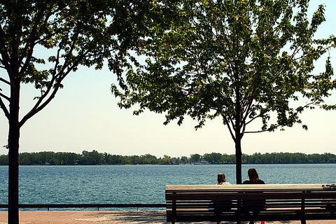
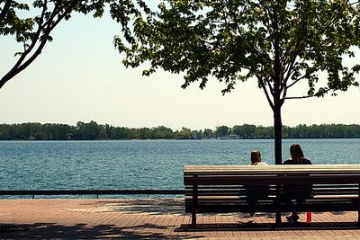
tags:
reason: Candidate B improves composition by including a second tree on the left, creating stronger framing symmetry and visual balance around the subjects. The wider view enhances depth and context without sacrificing subject clarity. Both images retain full content coverage (two people on bench, lake, horizon), but B’s framing better follows the rule of thirds and uses natural elements to guide the eye. Lighting and texture are equally natural in both; however, B’s slightly more expansive foreground and canopy framing adds compositional richness without distortion or artifacts.
notes: FCDB ranking pair. photo_id=15961409258, pair_index=1, source_votes=2, edit_votes=3. source=crop_1, edit=crop_0, preference_strength=weak.

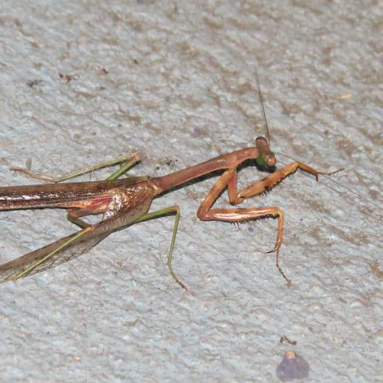
tags:
reason: Both images are nearly identical in framing, subject placement, and detail. The mantis is fully captured with balanced negative space, sharp focus on the head and forelegs, and natural lighting. Minor differences in edge cropping (e.g., slight variation in lower-left leg visibility) do not meaningfully affect composition, content coverage, or naturalness. Neither candidate offers a clear advantage.
notes: FCDB ranking pair. photo_id=10944401125, pair_index=1, source_votes=0, edit_votes=5. source=crop_0, edit=crop_1, preference_strength=strong.


tags:
reason: Both images show nearly identical framing, subject placement, and lighting. The mantis is fully captured in both, with consistent focus and texture detail. Minor differences in edge cropping (e.g., slight variation in bottom/right margin) do not meaningfully affect composition, content coverage, or naturalness. Neither candidate offers a clear compositional advantage; the images are effectively equivalent for evaluation purposes.
notes: FCDB ranking pair. photo_id=10944401125, pair_index=9, source_votes=5, edit_votes=0. source=crop_1, edit=crop_0, preference_strength=strong.
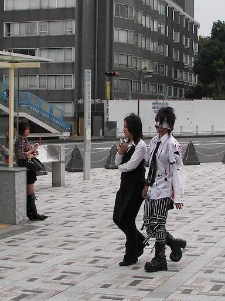
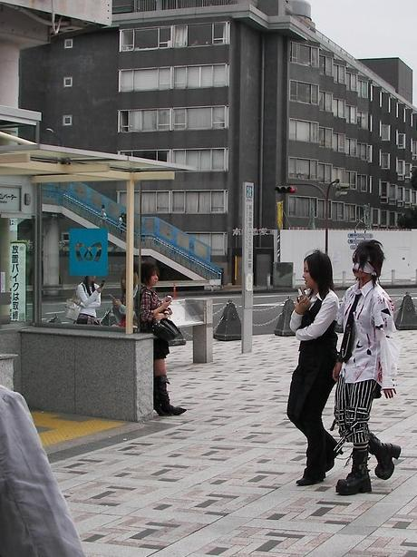
tags:
reason: Candidate B improves composition by including the bus shelter signage and clearer context of the urban setting (e.g., '77' sign, stairway), enhancing scene semantics without cropping critical subjects. The framing better balances the two central figures with environmental elements, and the slight inclusion of the foreground shoulder adds depth without distraction. Candidate A crops too tightly on the left, cutting off part of the shelter and reducing contextual richness. Both preserve main subjects well, but B offers superior spatial storytelling and visual coherence.
notes: FCDB ranking pair. photo_id=3579364195, pair_index=1, source_votes=2, edit_votes=3. source=crop_0, edit=crop_1, preference_strength=weak.


tags:
reason: Candidate B includes more contextual elements (bus shelter signage, clearer background architecture, and a partial foreground figure adding depth) without sacrificing the main subjects. The framing better balances the two central figures with environmental context, improving narrative and spatial coherence. The crop avoids cutting off key elements (e.g., the shelter roof and signage are fully visible), enhancing scene semantics. Lighting and perspective remain consistent and natural in both, but B’s wider view provides richer visual storytelling while maintaining sharp focus and realistic texture.
notes: FCDB ranking pair. photo_id=3579364195, pair_index=1, source_votes=3, edit_votes=2. source=crop_1, edit=crop_0, preference_strength=weak.

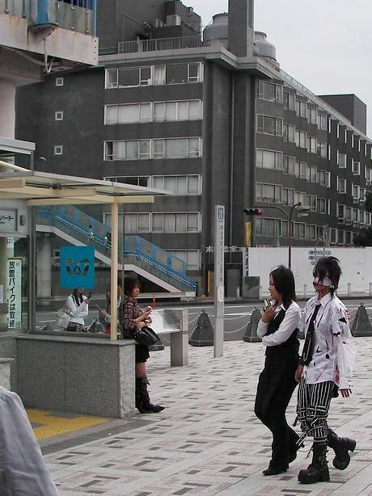
tags:
reason: Candidate B improves composition by centering the two main subjects more effectively, reducing excessive empty space on the right (present in A), and better balancing the left-side bus shelter with the right-side figures. The framing retains all key elements—including the seated woman, shelter signage, stairs, and background building—without cropping critical content. The slight tighter crop enhances visual focus on the interaction between the two walking figures while preserving context. Lighting and perspective remain consistent and natural in both, but B’s tighter, more symmetrical framing yields stronger visual cohesion.
notes: FCDB ranking pair. photo_id=3579364195, pair_index=4, source_votes=2, edit_votes=3. source=crop_0, edit=crop_1, preference_strength=weak.

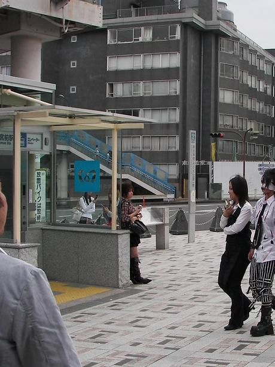
tags:
reason: Candidate B improves composition by centering the two distinctive figures walking (strong visual interest and narrative), while maintaining full visibility of the background architecture, bus shelter, and stairs. The tighter crop eliminates excessive empty pavement on the left (present in A) and better balances the frame. Both subjects are fully captured with clear detail, preserving identity and scene semantics. Lighting and perspective remain natural; no artifacts introduced. Candidate A includes a partially cropped shoulder in the foreground (distracting) and leaves more dead space, weakening focus.
notes: FCDB ranking pair. photo_id=3579364195, pair_index=4, source_votes=3, edit_votes=2. source=crop_1, edit=crop_0, preference_strength=weak.


tags:
reason: Candidate B provides a slightly wider, more balanced framing that includes the subject’s full arms and lower torso, enhancing the sense of movement and interaction with the environment. The subject is better centered horizontally, and the rock formation frames the scene more symmetrically. Lighting and texture are consistent and natural in both, but B avoids the tight crop of A that cuts off the subject’s hands and reduces contextual clarity. The added space around the subject improves visual breathing room without sacrificing focus.
notes: FCDB ranking pair. photo_id=5755997394, pair_index=5, source_votes=2, edit_votes=3. source=crop_1, edit=crop_0, preference_strength=weak.
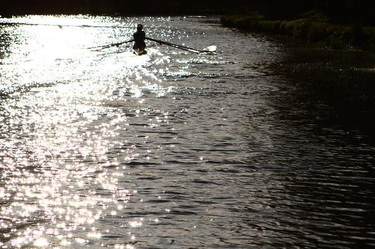
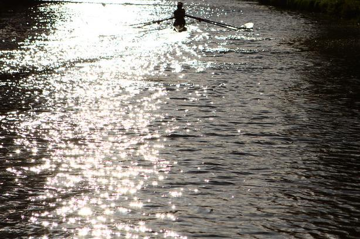
tags:
reason: Candidate B improves composition by centering the rower more effectively within the frame and balancing the glittering water reflections across the image. The subject is slightly larger and more clearly defined, enhancing visual focus without cropping critical content. Both images preserve full subject identity and scene semantics, but B’s framing reduces excessive empty space on the left (present in A) and creates a more harmonious diagonal flow from top-left light to bottom-right shadow. Lighting and texture are equally natural in both, though B’s slightly tighter crop enhances intimacy without distortion.
notes: FCDB ranking pair. photo_id=8062088404, pair_index=4, source_votes=3, edit_votes=2. source=crop_1, edit=crop_0, preference_strength=weak.
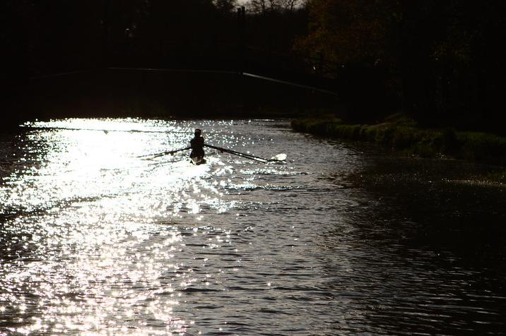

tags:
reason: Candidate B improves composition by centering the rower more effectively within the frame and balancing the glittering water reflections symmetrically around the subject. The tighter crop eliminates excessive empty space on the left (present in A) without sacrificing any key content—the rower, oars, and environmental context remain fully visible. Lighting and silhouette integrity are preserved, and the enhanced symmetry strengthens visual focus. Candidate A’s wider left margin dilutes the subject’s dominance and weakens compositional harmony.
notes: FCDB ranking pair. photo_id=8062088404, pair_index=7, source_votes=2, edit_votes=3. source=crop_0, edit=crop_1, preference_strength=weak.

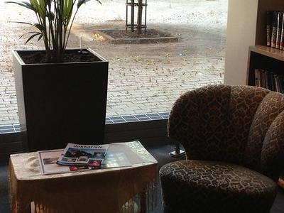
tags:
reason: Candidate B improves composition by including the potted plant on the left, which balances the bookshelf on the right and creates a more symmetrical, grounded interior scene. The coffee table with magazine is better centered and fully visible, reinforcing the lived-in ambiance. The chair remains the focal point but is now framed within a more complete environmental context. Candidate A crops out the plant and part of the table, creating visual imbalance and losing contextual detail without gaining tighter focus or aesthetic refinement. Both images maintain high visual naturalness, but B’s fuller framing enhances narrative and spatial coherence.
notes: FCDB ranking pair. photo_id=2199328642, pair_index=0, source_votes=2, edit_votes=3. source=crop_1, edit=crop_0, preference_strength=weak.
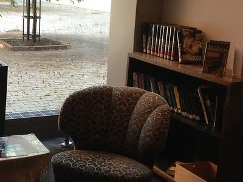
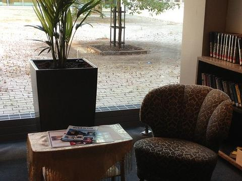
tags:
reason: Candidate A provides a more balanced composition with the potted plant anchoring the left side, the armchair on the right, and the coffee table in the foreground creating depth. The window view is fully visible, preserving context and natural light. Candidate B crops out the plant and part of the table, reducing environmental storytelling and visual balance; the bookshelf dominates the right side without counterweight, making the frame feel lopsided. Both maintain good naturalness, but A better preserves scene semantics and spatial harmony.
notes: FCDB ranking pair. photo_id=2199328642, pair_index=1, source_votes=3, edit_votes=2. source=crop_0, edit=crop_1, preference_strength=weak.


tags:
reason: Candidate B includes the second person in the doorway, which adds critical narrative context and human element without compromising the primary subject (soldier). The framing balances the two figures across the stone wall, creating visual tension and storytelling depth. Candidate A crops out this key figure, reducing scene semantics and leaving excessive empty space on the right. Both images have similar lighting and texture fidelity, but B’s inclusion of the civilian enhances realism and situational authenticity, improving composition and content coverage.
notes: FCDB ranking pair. photo_id=4301604363, pair_index=4, source_votes=2, edit_votes=3. source=crop_0, edit=crop_1, preference_strength=weak.
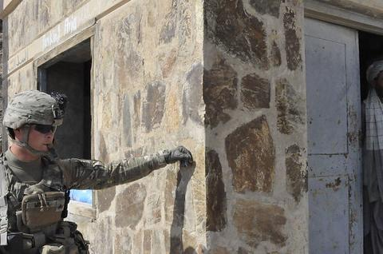
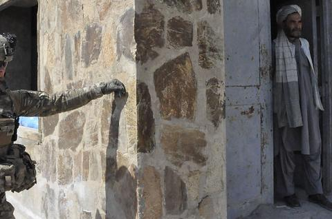
tags:
reason: Candidate B provides a tighter, more balanced framing that centers the soldier’s gesture and face while retaining full visibility of the man in the doorway. The composition follows the rule of thirds more effectively, with stronger visual flow from the soldier’s arm to the stone corner and then to the observer. Candidate A cuts off the soldier’s head and helmet, weakening subject identity and reducing visual impact; it also leaves excessive empty space on the right. Both images maintain high visual naturalness, but B better preserves critical content (soldier’s face, full posture) and enhances compositional clarity without artifacts or distortion.
notes: FCDB ranking pair. photo_id=4301604363, pair_index=4, source_votes=3, edit_votes=2. source=crop_1, edit=crop_0, preference_strength=weak.
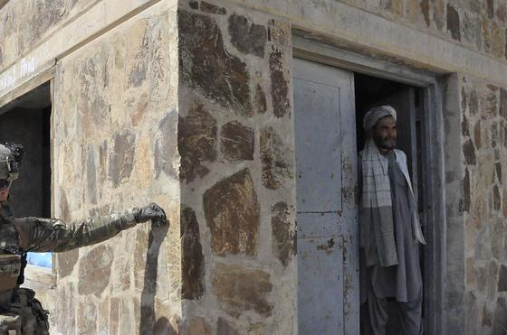

tags:
reason: Candidate A includes the full upper body and head of the soldier, preserving identity and context (e.g., helmet, sunglasses, gear), while maintaining strong compositional balance: the soldier’s extended arm leads the eye toward the man in the doorway, creating a clear visual narrative. Candidate B crops the soldier’s head and shoulders, losing critical subject information and weakening the interaction dynamic. Both images have similar lighting and texture fidelity, but A’s framing better respects the scene’s spatial relationship and storytelling intent without introducing artifacts or distortion.
notes: FCDB ranking pair. photo_id=4301604363, pair_index=8, source_votes=2, edit_votes=3. source=crop_0, edit=crop_1, preference_strength=weak.
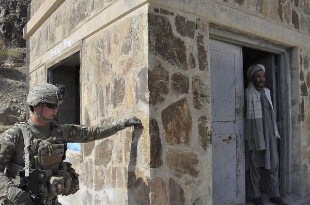

tags:
reason: Candidate A includes the full upper body and head of the soldier, preserving identity and context (e.g., helmet, sunglasses, gear), while maintaining strong compositional balance: the soldier’s extended arm leads the eye toward the man in the doorway, creating a clear visual narrative. Candidate B crops the soldier’s head and shoulders, losing critical subject information and weakening the interaction dynamic. Both images have similar lighting and texture fidelity, but A’s framing better respects the scene’s spatial relationship and human elements without introducing artifacts or distortion.
notes: FCDB ranking pair. photo_id=4301604363, pair_index=8, source_votes=3, edit_votes=2. source=crop_1, edit=crop_0, preference_strength=weak.


tags:
reason: Candidate B provides a more balanced and complete framing: it includes the full stone wall, reveals the barred window on the right (adding contextual detail), and better centers the interaction between the two figures. The soldier’s arm and weapon remain fully visible, and the man in the doorway is shown with full posture and feet, enhancing realism and narrative. Candidate A crops too tightly on the left, cutting off part of the building and losing environmental context; the tighter crop also slightly compresses the spatial relationship. Both images are sharp and natural, but B’s composition better respects the scene’s spatial logic and documentary integrity.
notes: FCDB ranking pair. photo_id=4301604363, pair_index=9, source_votes=3, edit_votes=2. source=crop_0, edit=crop_1, preference_strength=weak.
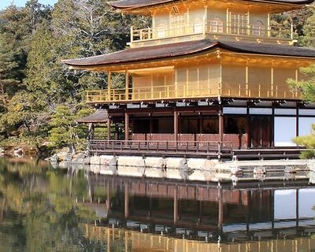
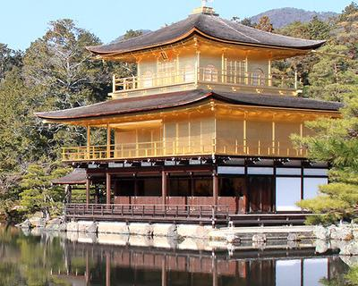
tags:
reason: Candidate A provides a more balanced, symmetrical framing of the Golden Pavilion, capturing the full structure including its base, surrounding stone platform, and complete reflection in the water. The wider crop preserves contextual elements (trees, distant mountain) that enhance depth and setting without clutter. Candidate B crops tightly on the upper two tiers, cutting off the lower level and part of the reflection, weakening structural completeness and visual grounding. Both images are sharp and natural, but A’s composition better honors the architectural integrity and serene symmetry central to the scene.
notes: FCDB ranking pair. photo_id=22531710197, pair_index=0, source_votes=3, edit_votes=2. source=crop_0, edit=crop_1, preference_strength=weak.


tags:
reason: Candidate A provides a more balanced, symmetrical framing of the Golden Pavilion, capturing the full structure including its base, surrounding stone platform, and complete reflection in the water. The wider view preserves contextual elements (trees, distant mountain) that enhance scene depth and cultural setting without clutter. Candidate B crops tightly on the upper two tiers, cutting off the lower level and part of the reflection, reducing architectural completeness and visual harmony. While B emphasizes gold detail, it sacrifices compositional integrity and semantic context. Both images are sharp and natural, but A’s framing better fulfills classical landscape composition principles.
notes: FCDB ranking pair. photo_id=22531710197, pair_index=0, source_votes=2, edit_votes=3. source=crop_1, edit=crop_0, preference_strength=weak.

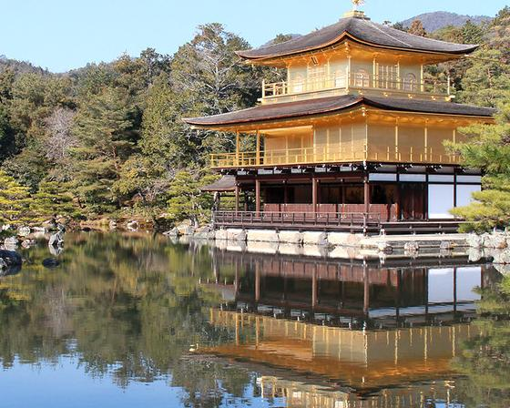
tags:
reason: Candidate B includes the full structure of the Golden Pavilion, revealing its complete tiered roof and architectural symmetry, which is essential to its identity and aesthetic. The framing balances the building, its reflection, and surrounding landscape more harmoniously, with better vertical proportion and inclusion of sky for breathing room. Candidate A crops the top of the pavilion, losing critical architectural context and creating an unbalanced, truncated composition. Both images are sharp and natural, but B excels in completeness and compositional integrity.
notes: FCDB ranking pair. photo_id=22531710197, pair_index=7, source_votes=3, edit_votes=2. source=crop_0, edit=crop_1, preference_strength=weak.

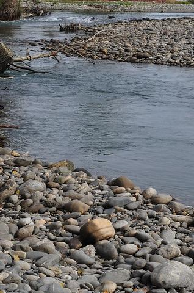
tags:
reason: Candidate A provides a more balanced composition with stronger visual flow: the river leads the eye from foreground pebbles toward the midground gravel bar and distant treeline, creating depth. The inclusion of the bridge and autumn foliage in the background adds context and environmental storytelling without clutter. Candidate B tightens the frame, cropping out the background elements that establish location and season, resulting in a flatter, less engaging scene. While both maintain natural lighting and texture fidelity, A’s wider framing better preserves the scene’s ecological and spatial semantics, enhancing narrative coherence without sacrificing foreground detail.
notes: FCDB ranking pair. photo_id=3886467178, pair_index=4, source_votes=2, edit_votes=3. source=crop_0, edit=crop_1, preference_strength=weak.
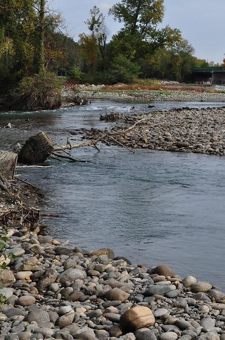
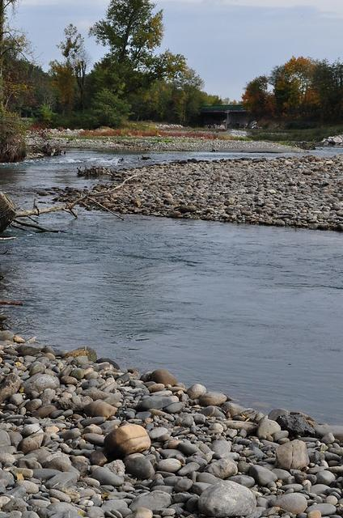
tags: api_error
reason: Invalid control character at: line 8 column 643 (char 783)
notes: FCDB ranking pair. photo_id=3886467178, pair_index=8, source_votes=1, edit_votes=4. source=crop_0, edit=crop_1, preference_strength=strong.
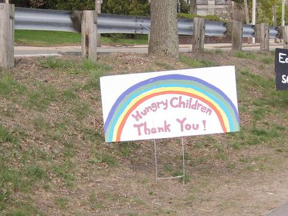

tags: A: distracting background sign, A: imbalanced framing
reason: Candidate B provides a cleaner, more focused composition by removing the partially visible black sign on the right, which distracts from the main subject (the 'Hungry Children Thank You!' rainbow sign). The framing in B centers the primary sign more effectively, improves visual balance, and retains all essential content. Background elements (tree, guardrail) are still present but less intrusive, enhancing naturalness without sacrificing context. Candidate A’s inclusion of the fragmented sign introduces visual noise and weakens the focal point.
notes: FCDB ranking pair. photo_id=15747766454, pair_index=1, source_votes=2, edit_votes=3. source=crop_1, edit=crop_0, preference_strength=weak.


tags:
reason: Candidate B provides a more balanced and contextually rich composition: the sign is centered with better foreground/background relationship, including visible pavement on the right that grounds the scene and suggests location (e.g., roadside). The wider framing includes more of the grassy slope and guardrail, enhancing spatial context without sacrificing the main subject. Lighting and perspective are consistent and natural in both, but B avoids the slightly cramped left-edge crop of A and offers improved visual flow from foreground to background. Content coverage is identical (sign fully visible, tree and guardrail present), but B’s framing better supports narrative (a public message near a road/school).
notes: FCDB ranking pair. photo_id=15747766454, pair_index=3, source_votes=2, edit_votes=3. source=crop_0, edit=crop_1, preference_strength=weak.
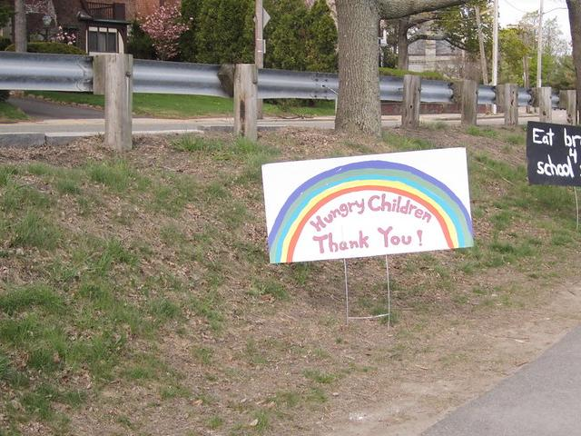
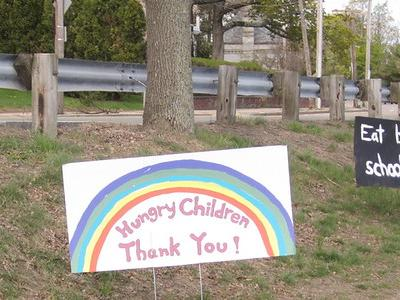
tags:
reason: Candidate B improves composition by centering the rainbow sign more effectively, reducing distracting foreground grass and dirt, and tightening the frame to emphasize the subject while retaining full legibility of 'Hungry Children Thank You!' and partial visibility of the adjacent sign. The background elements (tree, guardrail, foliage) remain contextually intact without clutter. Lighting and perspective are consistent and natural in both, but B’s tighter crop enhances visual focus and balance without sacrificing key content.
notes: FCDB ranking pair. photo_id=15747766454, pair_index=3, source_votes=3, edit_votes=2. source=crop_1, edit=crop_0, preference_strength=weak.
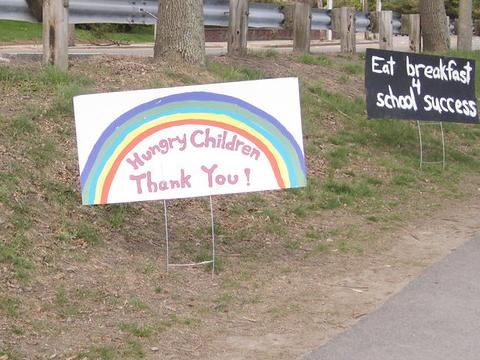
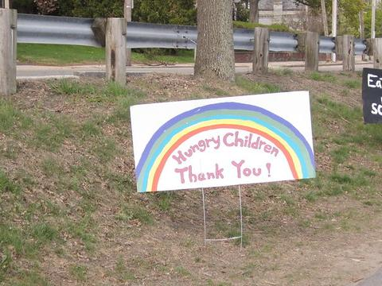
tags: A: excessive right-side empty space, A: partial sign cut off
reason: Candidate B tightens the frame, centering the primary subject (the 'Hungry Children Thank You!' sign) more effectively and eliminating distracting empty space on the right. The guardrail and tree remain visible for context, preserving scene semantics. Candidate A includes a partially cropped black sign ('Eat breakfast...') that adds visual clutter without full legibility, and the wider crop dilutes focus. Both maintain good natural lighting and texture, but B’s framing improves balance and visual hierarchy.
notes: FCDB ranking pair. photo_id=15747766454, pair_index=4, source_votes=2, edit_votes=3. source=crop_0, edit=crop_1, preference_strength=weak.
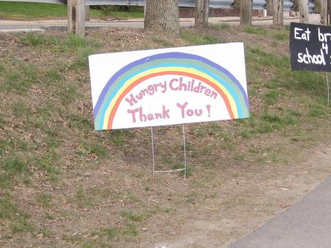

tags: A: excessive background clutter, A: distracting guardrail
reason: Candidate B tightens the frame, eliminating the visually disruptive guardrail and excess background foliage that compete with the main subject (the rainbow sign). The tighter crop improves visual focus and balance while fully preserving the primary sign's text and imagery, as well as the secondary sign's partial visibility. Lighting and perspective remain natural in both, but B’s cleaner composition enhances readability and emotional impact without sacrificing context.
notes: FCDB ranking pair. photo_id=15747766454, pair_index=5, source_votes=2, edit_votes=3. source=crop_0, edit=crop_1, preference_strength=weak.
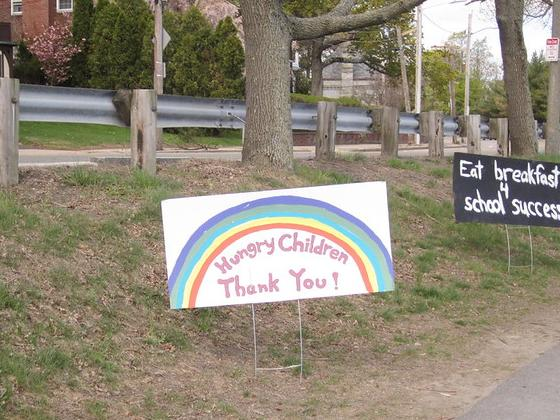

tags:
reason: Candidate B provides a more balanced and contextually rich composition: it includes the guardrail, trees, and background environment, enhancing scene depth and realism without sacrificing the main sign. The rainbow sign remains clearly legible and well-framed, while the additional context (e.g., street, foliage, partial second sign) supports narrative coherence. Candidate A crops too tightly, losing environmental cues and creating an unbalanced left-heavy frame with excessive empty ground space. Both images are visually natural, but B’s wider framing improves compositional harmony and situational understanding.
notes: FCDB ranking pair. photo_id=15747766454, pair_index=5, source_votes=3, edit_votes=2. source=crop_1, edit=crop_0, preference_strength=weak.


tags:
reason: Candidate B provides a tighter, more balanced framing that includes both signs fully while preserving context (trees, guardrail, sidewalk). The black sign on the right is now legible ('Eat breakfast school success'), enhancing semantic completeness. The horizon line is more level, and the subject (rainbow sign) remains well-centered with improved negative space distribution. Candidate A crops the black sign partially and includes more empty ground, weakening visual balance. Both maintain good naturalness, but B’s composition better serves narrative and aesthetic coherence.
notes: FCDB ranking pair. photo_id=15747766454, pair_index=7, source_votes=2, edit_votes=3. source=crop_0, edit=crop_1, preference_strength=weak.


tags:
reason: Candidate B improves composition by centering the architectural reflection and balancing the left-side building texture with the right-side negative space, creating stronger symmetry and visual rhythm. The group of people remains fully visible and well-placed within the frame, preserving all key content. The motion blur at the bottom is equally present in both, but B’s tighter framing reduces distracting peripheral noise and enhances focus on the reflective geometry. Lighting and perspective feel more coherent in B, with less visual clutter on the left edge (A’s left side is overly cropped into a dark, ambiguous area). Overall, B achieves superior compositional harmony without sacrificing content or realism.
notes: FCDB ranking pair. photo_id=4973476179, pair_index=1, source_votes=2, edit_votes=3. source=crop_0, edit=crop_1, preference_strength=weak.
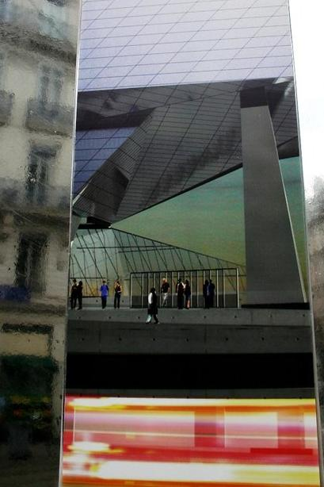
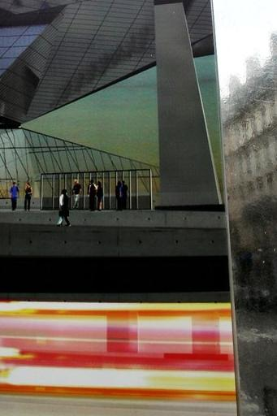
tags:
reason: Candidate B improves composition by centering the architectural reflection and balancing the left-side building texture with the right-side negative space, creating stronger symmetry and visual rhythm. The subject group remains fully visible and better integrated into the frame. The motion blur at bottom is preserved identically, but B avoids the awkward right-edge truncation in A, enhancing spatial coherence. Lighting and perspective are equally natural in both, but B’s framing yields a more intentional, gallery-worthy composition without sacrificing any key content.
notes: FCDB ranking pair. photo_id=4973476179, pair_index=1, source_votes=3, edit_votes=2. source=crop_1, edit=crop_0, preference_strength=weak.


tags:
reason: Candidate B improves composition by better balancing the vertical reflective panels, centering the architectural reflection more symmetrically, and reducing excessive empty white space at the top present in A. The light streak at the bottom is more fully captured and horizontally aligned, enhancing dynamism. Both preserve the same key content (people, building, reflections), but B’s framing tightens the scene without cropping critical elements, yielding stronger visual rhythm and coherence. Slight improvement in exposure balance and reduced overexposure in the upper right corner also contribute to higher naturalness.
notes: FCDB ranking pair. photo_id=4973476179, pair_index=9, source_votes=2, edit_votes=3. source=crop_0, edit=crop_1, preference_strength=weak.
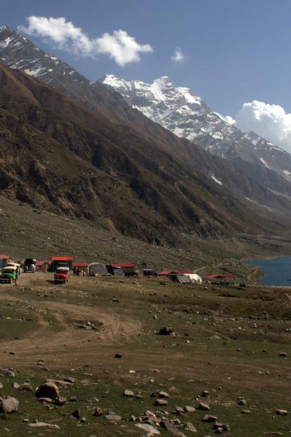
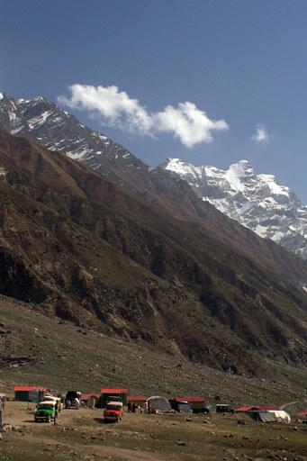
tags:
reason: Candidate B improves composition by including the lake on the right, which adds depth, balance, and visual interest without sacrificing the main subject (mountains and camp). The foreground terrain is more fully revealed, enhancing spatial context and leading lines. Lighting and texture remain natural and consistent. Candidate A crops out the lake and right-side terrain, resulting in slightly heavier left-weighting and less environmental storytelling. Both preserve key content, but B offers richer scene semantics and stronger compositional harmony.
notes: FCDB ranking pair. photo_id=8715261793, pair_index=1, source_votes=2, edit_votes=3. source=crop_1, edit=crop_0, preference_strength=weak.
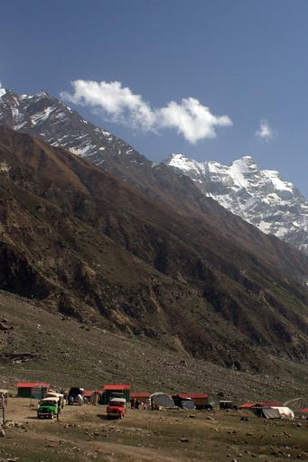
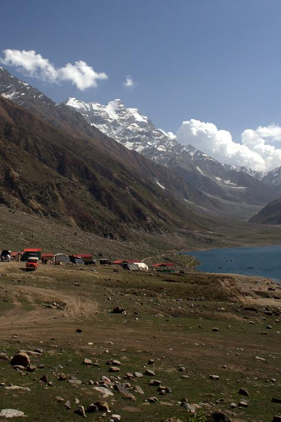
tags: B_crops_lake, B_loses_context
reason: Candidate A includes the full lake, enhancing depth and environmental context, and better balances the foreground campsite with the midground slope and background peaks. The wider framing creates a more harmonious triangular composition (foreground → slope → peak) and preserves critical scene semantics (alpine lake setting). Candidate B tightens the crop, cutting off the lake and reducing spatial context, which weakens the sense of scale and location. While B slightly emphasizes the mountain mass, it sacrifices key content and visual storytelling without improving focus or naturalness—lighting and texture are comparable in both.
notes: FCDB ranking pair. photo_id=8715261793, pair_index=2, source_votes=3, edit_votes=2. source=crop_0, edit=crop_1, preference_strength=weak.


tags: B_crops_lake, B_loses_ground_context
reason: Candidate A includes the full lake, grounding the campsite in a complete landscape and enhancing depth and scale. The foreground rocks and dirt path lead the eye naturally toward the tents and mountains, creating stronger visual flow. Candidate B crops out the lake and lower terrain, losing environmental context and reducing compositional balance; the tighter framing feels truncated and diminishes the sense of place. Both images are visually natural, but A better preserves scene semantics and offers superior framing without artifacts.
notes: FCDB ranking pair. photo_id=8715261793, pair_index=2, source_votes=2, edit_votes=3. source=crop_1, edit=crop_0, preference_strength=weak.


tags: B_crops_landscape_context
reason: Candidate A includes the foreground terrain, scattered rocks, dirt path, and the full extent of the lakeside campsite—including vehicles and tents—providing strong depth, scale, and narrative context. The composition follows a natural diagonal from lower-left to upper-right, guiding the eye toward the snow-capped peaks while maintaining visual balance. Candidate B tightens the crop significantly, cutting off the lake, much of the foreground, and key contextual elements (e.g., the green truck and full tent line), reducing spatial storytelling and environmental immersion. While B emphasizes the mountains more directly, it sacrifices compositional richness and scene completeness without improving clarity or aesthetic harmony. Both images are visually natural, but A’s broader framing enhances realism and engagement.
notes: FCDB ranking pair. photo_id=8715261793, pair_index=3, source_votes=3, edit_votes=2. source=crop_1, edit=crop_0, preference_strength=weak.

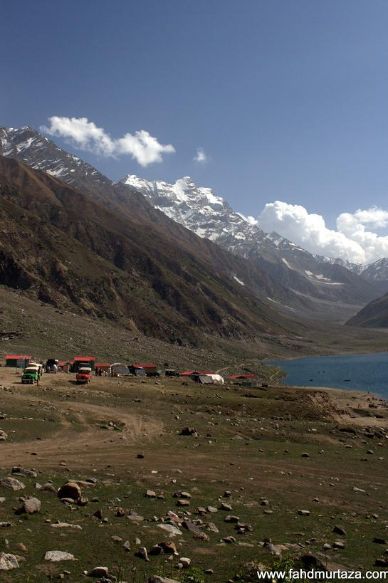
tags:
reason: Candidate B offers a more balanced and dynamic composition: the mountain range is centered more effectively, the lake extends further right, creating better visual flow and depth. The foreground rocks and dirt path lead the eye naturally toward the campsite and mountains. Candidate A crops too tightly on the left, cutting off part of the valley and reducing spatial context; the cloud placement in A feels slightly unbalanced (heavier on left), whereas B’s clouds frame the peaks more symmetrically. Both preserve all key content (campsite, lake, mountains), but B enhances visual harmony without artifacts or distortion. Slight edge in naturalness due to better exposure balance and perspective.
notes: FCDB ranking pair. photo_id=8715261793, pair_index=9, source_votes=2, edit_votes=3. source=crop_1, edit=crop_0, preference_strength=weak.
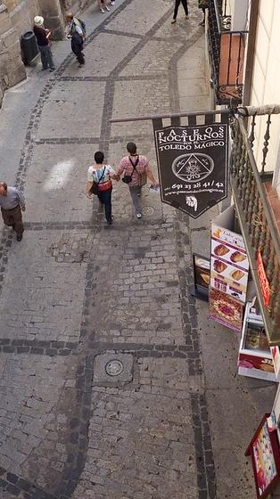

tags:
reason: Candidate B improves composition by tightening the frame to emphasize the central couple walking toward the viewer, creating stronger leading lines along the cobblestone path and better visual balance. The sign remains fully visible, and more contextual detail (menu displays, railing) is retained without clutter. Candidate A includes excessive empty upper space and cuts off some foreground elements, slightly weakening focus. Both preserve key subjects and scene semantics, but B’s tighter, more dynamic framing enhances visual flow and engagement.
notes: FCDB ranking pair. photo_id=16569865263, pair_index=5, source_votes=3, edit_votes=2. source=crop_1, edit=crop_0, preference_strength=weak.
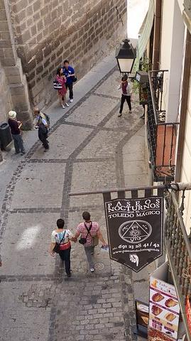
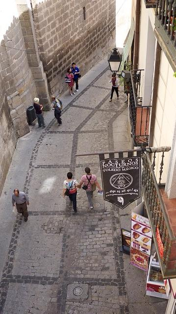
tags: A: excessive lower empty space, A: weaker subject emphasis
reason: Candidate B tightens the frame, eliminating unnecessary lower pavement and improving visual balance. The main subjects (two walking people) are more centrally emphasized, and the sign remains fully visible. The tighter crop enhances narrative focus without losing any key content—people, architecture, signage, or context—and maintains natural perspective and lighting. Candidate A includes redundant foreground space that dilutes the composition and reduces subject prominence.
notes: FCDB ranking pair. photo_id=16569865263, pair_index=6, source_votes=2, edit_votes=3. source=crop_0, edit=crop_1, preference_strength=weak.


tags:
reason: Candidate B includes an additional person entering from the bottom left, improving scene dynamism and narrative completeness without crowding. The framing better balances the left wall and right balcony elements, with more symmetrical negative space and stronger leading lines toward the center group. The sign remains fully visible, and lighting/texture are consistent. Candidate A crops slightly tighter, losing contextual depth and one subject, resulting in a less engaging composition.
notes: FCDB ranking pair. photo_id=16569865263, pair_index=6, source_votes=3, edit_votes=2. source=crop_1, edit=crop_0, preference_strength=weak.
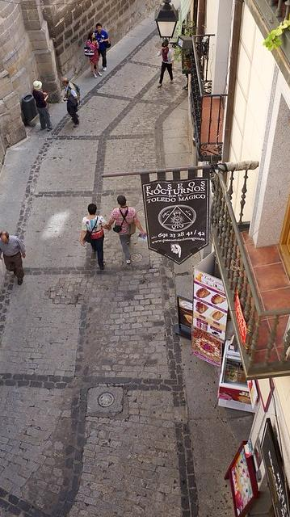
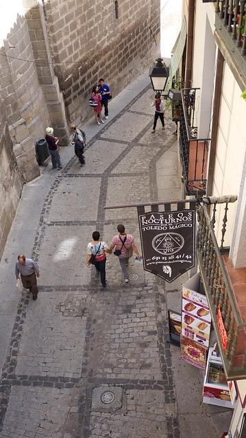
tags:
reason: Candidate B improves composition by centering the street’s diagonal flow and aligning the hanging sign more symmetrically within the frame. The tighter crop eliminates excessive empty space in the lower-left (present in A) while retaining all key subjects: pedestrians, architecture, signage, and street pattern. The top-right balcony railing and potted plant add depth and framing without distraction. Lighting and perspective remain natural; no artifacts introduced. Candidate A includes a slightly distracting foreground man on the far left who draws attention away from the central narrative of the alley and sign. Thus, B offers superior balance, focus, and visual harmony without sacrificing content.
notes: FCDB ranking pair. photo_id=16569865263, pair_index=9, source_votes=3, edit_votes=2. source=crop_1, edit=crop_0, preference_strength=weak.
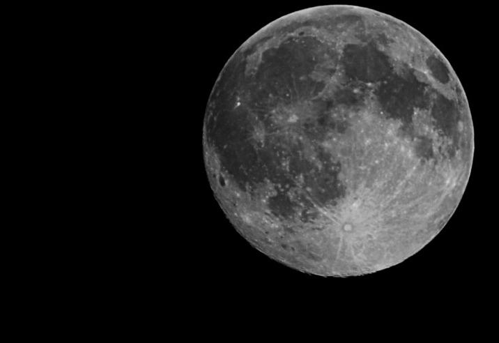
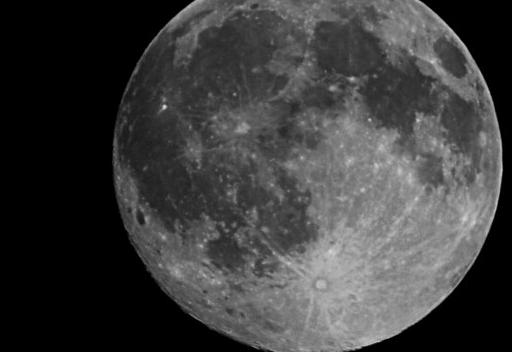
tags:
reason: Candidate B centers the Moon more symmetrically, eliminating excessive negative space on the left (present in A) and improving visual balance. Both preserve full lunar detail and identity, but B’s tighter, centered framing enhances focus and compositional harmony without cropping any critical content. Lighting, texture, and realism are identical and excellent in both; B simply executes stronger classical composition (rule of center, symmetry, minimal distraction).
notes: FCDB ranking pair. photo_id=4154418862, pair_index=2, source_votes=3, edit_votes=2. source=crop_1, edit=crop_0, preference_strength=weak.


tags:
reason: Both images present a near-identical centered full moon against black space, with excellent detail, contrast, and no visible artifacts. Minor differences in edge sharpness or vignetting are negligible and not compositionally decisive. Neither crop sacrifices content nor introduces distortion; both are strong, balanced compositions. No clear advantage for either.
notes: FCDB ranking pair. photo_id=4154418862, pair_index=5, source_votes=5, edit_votes=0. source=crop_1, edit=crop_0, preference_strength=strong.
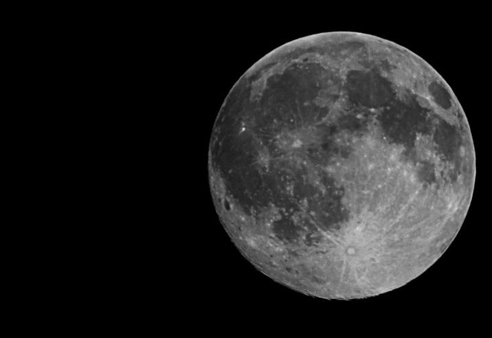

tags:
reason: Candidate A frames the Moon more centrally and fully, preserving its entire disc with balanced negative space on the left. Candidate B crops the Moon slightly on the right and top, losing subtle limb detail and appearing less intentional in framing. Both are high-quality monochrome lunar images with excellent texture and contrast, but A’s composition is stronger due to complete subject inclusion and more harmonious asymmetry.
notes: FCDB ranking pair. photo_id=4154418862, pair_index=7, source_votes=2, edit_votes=3. source=crop_1, edit=crop_0, preference_strength=weak.


tags:
reason: Candidate B offers a tighter, more balanced framing that better centers the group and emphasizes the rhythmic repetition of legs and feet in water. The crop removes excessive empty blue space below (present in A), improving visual weight distribution without sacrificing any key content—the full lower legs, feet, and edge of the pool are preserved. Lighting and water texture appear slightly more consistent and natural in B, with less distortion near the bottom edge. Both preserve identity and scene semantics equally well, but B’s composition is more deliberate and aesthetically refined.
notes: FCDB ranking pair. photo_id=11579722535, pair_index=1, source_votes=3, edit_votes=2. source=crop_0, edit=crop_1, preference_strength=weak.
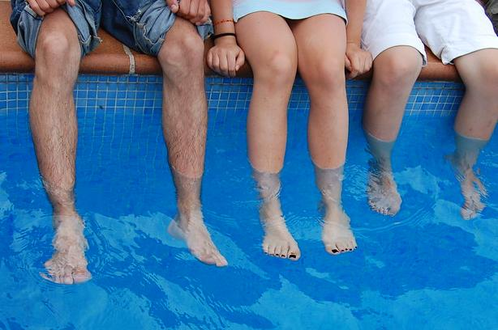
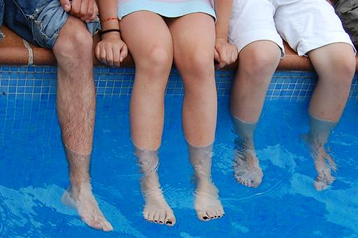
tags:
reason: Candidate B offers a tighter, more balanced framing that better centers the group and emphasizes the rhythmic repetition of legs and feet in water. The crop removes excessive empty space at the bottom (present in A), improving visual weight distribution without sacrificing any key content—legs, feet, pool edge, and water interaction remain fully visible. Lighting and texture are consistent and natural in both, but B’s slightly higher vantage point enhances clarity of foot details and water distortion, yielding stronger compositional cohesion and focus.
notes: FCDB ranking pair. photo_id=11579722535, pair_index=1, source_votes=2, edit_votes=3. source=crop_1, edit=crop_0, preference_strength=weak.
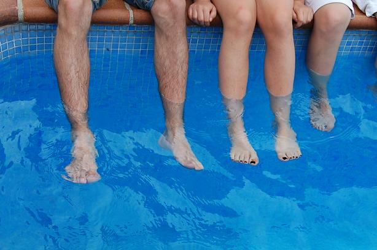
tags:
reason: Candidate B includes more of the pool edge on the left (tile and coping), providing stronger contextual framing and grounding. This improves compositional balance and spatial orientation without cropping any essential subject matter (all feet and lower legs remain fully visible). The added context enhances scene semantics (clearly a poolside setting) and avoids the slightly cramped, top-heavy feel of Candidate A. Lighting, texture, and realism are identical; the only difference is the inclusion of meaningful environmental detail in B, which elevates the composition.
notes: FCDB ranking pair. photo_id=11579722535, pair_index=6, source_votes=3, edit_votes=2. source=crop_0, edit=crop_1, preference_strength=weak.


tags:
reason: Candidate B provides a tighter, more balanced framing that centers the group of feet and legs symmetrically, improving visual rhythm and focus. The crop eliminates excess empty space on the left (tile edge) present in A, enhancing compositional efficiency without losing any key content—the full set of feet, lower legs, and pool edge remain visible. Lighting and water texture appear equally natural in both, but B’s slightly more centered alignment yields stronger visual harmony and avoids the off-balance feel of A’s left-heavy framing.
notes: FCDB ranking pair. photo_id=11579722535, pair_index=6, source_votes=2, edit_votes=3. source=crop_1, edit=crop_0, preference_strength=weak.


tags:
reason: Candidate B includes a fourth person on the right, improving group completeness and compositional balance without crowding. The wider framing maintains the same strong horizontal alignment of legs and feet, enhances symmetry, and better captures the full context of the shared moment. The water surface remains visually rich, and no critical detail is lost; in fact, more of the scene’s social dynamic is preserved. Lighting and texture are consistent and natural in both, but B’s inclusion of the additional subject strengthens narrative and visual cohesion.
notes: FCDB ranking pair. photo_id=11579722535, pair_index=9, source_votes=3, edit_votes=2. source=crop_1, edit=crop_0, preference_strength=weak.
tags: A: excessive foreground blur, A: weak horizon placement
reason: Candidate B improves composition by centering the horizon more naturally and including three distinct distant lights that add depth and visual interest, while maintaining sharpness in the midground rocks. Candidate A overemphasizes the blurred pebble foreground, which distracts from the scene’s serene balance and pushes the horizon too high, reducing sky presence. Both preserve key content (rocks, water, horizon), but B better balances foreground/midground/sky and avoids the unnatural blur dominance in A.
notes: FCDB ranking pair. photo_id=4458394677, pair_index=9, source_votes=2, edit_votes=3. source=crop_0, edit=crop_1, preference_strength=weak.


tags: A: excessive foreground blur, A: weak horizon placement
reason: Candidate B improves composition by raising the horizon to a more balanced position (approx. lower third), reducing excessive blurred foreground that dominates Candidate A. It preserves all key content—rocks, water clarity, distant lights—and enhances visual naturalness by maintaining sharper midground detail and more realistic depth. Candidate A’s extreme foreground blur distracts and weakens subject focus, while B retains clarity where it matters most without sacrificing atmosphere. Minor color saturation is consistent across both; no artifacts detected.
notes: FCDB ranking pair. photo_id=4458394677, pair_index=9, source_votes=3, edit_votes=2. source=crop_1, edit=crop_0, preference_strength=weak.

tags:
reason: Candidate B improves composition by shifting the rock/substrate to the upper third, creating a more balanced negative space in the lower two-thirds filled with textured water. The water surface occupies a larger, more harmonious proportion, enhancing visual flow and depth. Both images retain the same subject (shallow water over rocky bed), but B avoids cutting off the top edge of the substrate too tightly, preserving context while emphasizing the dynamic water ripples. Lighting and texture remain natural and consistent; no artifacts introduced. The slight repositioning yields better adherence to rule-of-thirds and improved visual rhythm.
notes: FCDB ranking pair. photo_id=2971363615, pair_index=0, source_votes=3, edit_votes=2. source=crop_0, edit=crop_1, preference_strength=weak.

tags:
reason: Candidate B improves composition by shifting the rock/substrate to the upper third, creating a more balanced negative space in the lower two-thirds filled with textured water. The water surface occupies a larger, more harmonious proportion, enhancing visual flow and depth. Both images retain the same key content (rocky substrate partially submerged), but B avoids cutting off the top edge of the substrate as in A, preserving scene context. Lighting and texture are equally natural in both, though B’s framing reduces slight visual clutter near the top edge present in A.
notes: FCDB ranking pair. photo_id=2971363615, pair_index=0, source_votes=2, edit_votes=3. source=crop_1, edit=crop_0, preference_strength=weak.

tags:
reason: Candidate B provides a slightly wider and more balanced framing that better captures the full extent of the submerged rock formation and its interaction with the water surface. The composition maintains strong visual focus on the textured rock while preserving more context of the surrounding ripples and light refraction. The added margin at the bottom improves balance and avoids cutting off the lower edge of the subject, enhancing naturalness. Both images are sharp and artifact-free, but B’s framing yields superior compositional harmony without sacrificing any key content.
notes: FCDB ranking pair. photo_id=2971363615, pair_index=2, source_votes=3, edit_votes=2. source=crop_0, edit=crop_1, preference_strength=weak.


tags:
reason: Candidate B provides a slightly wider, more balanced framing that includes more of the submerged rock formation and surrounding water texture, improving compositional context without cutting off key elements. The subject (rock/reef under shallow water) is fully visible with better spatial relationship to the water surface. Lighting and refraction effects are rendered naturally in both, but B’s crop avoids the tight, slightly top-heavy framing of A, yielding better visual flow and negative space distribution. No content loss or artifacts in B; it preserves all critical details while enhancing composition.
notes: FCDB ranking pair. photo_id=2971363615, pair_index=3, source_votes=3, edit_votes=2. source=crop_0, edit=crop_1, preference_strength=weak.
tags:
reason: Candidate B provides a slightly wider, more balanced framing that better captures the full extent of the submerged rock formation and surrounding water texture. The subject (rock/reef) is centered more naturally, with improved negative space distribution—especially in the lower portion—enhancing visual flow. Both images retain identical content and naturalness, but B’s crop avoids cutting off the upper-right edge of the rock, preserving scene integrity and improving compositional harmony without introducing artifacts or distortion.
notes: FCDB ranking pair. photo_id=2971363615, pair_index=3, source_votes=2, edit_votes=3. source=crop_1, edit=crop_0, preference_strength=weak.

tags:
reason: Candidate B provides a slightly wider and more balanced framing that better centers the submerged rock formation while preserving the dynamic water surface in the foreground. The subject (rock/reef) is more fully included and visually anchored, improving compositional balance without cropping critical elements. Lighting and texture remain natural and consistent between both, but B’s crop enhances visual flow from foreground ripples to midground subject, yielding stronger depth and focus. Candidate A cuts off part of the rock structure on the left, reducing subject completeness.
notes: FCDB ranking pair. photo_id=2971363615, pair_index=5, source_votes=3, edit_votes=2. source=crop_0, edit=crop_1, preference_strength=weak.

tags:
reason: Candidate B provides a slightly wider and more balanced framing that better centers the submerged rock formation while preserving the dynamic water surface in the foreground. The subject (rock/reef under shallow water) is more fully visible, with improved context and spatial relationship to the ripples. Lighting and texture are consistent and natural in both, but B avoids the tighter crop of A, which cuts off part of the rock structure and reduces visual coherence. The composition in B follows a more pleasing diagonal flow from top-right to bottom-left, enhancing depth and leading the eye naturally.
notes: FCDB ranking pair. photo_id=2971363615, pair_index=5, source_votes=2, edit_votes=3. source=crop_1, edit=crop_0, preference_strength=weak.
tags:
reason: Candidate A includes the full Banksy figure actively drawing the heart, preserving the narrative, subject identity, and dynamic action—critical to the artwork’s meaning. The framing balances the peace sign, plus, and heart symbols with the artist, creating strong visual storytelling and compositional harmony. Candidate B crops out the artist entirely, reducing the image to static symbols and losing the central subject and intent. While B has slightly cleaner wall texture (minor naturalness gain), this is vastly outweighed by the loss of content and compositional integrity. A excels in all evaluated dimensions.
notes: FCDB ranking pair. photo_id=5120859921, pair_index=1, source_votes=2, edit_votes=3. source=crop_1, edit=crop_0, preference_strength=weak.
tags:
reason: Candidate A includes the full figure of the man on the right, preserving the narrative and identity of the street art (likely Banksy’s 'Peace + Love' piece), while maintaining strong compositional balance with the peace sign, plus, and heart. Candidate B crops the man’s head and upper torso, weakening the subject’s presence and visual storytelling. Both show similar texture and lighting, but A’s fuller framing enhances context without sacrificing tight composition—its inclusion of the bag at the bottom also adds grounding. The slight over-crop in B reduces content coverage and visual completeness, making A superior overall.
notes: FCDB ranking pair. photo_id=5120859921, pair_index=4, source_votes=3, edit_votes=2. source=crop_0, edit=crop_1, preference_strength=weak.


tags:
reason: Candidate B includes more of the figure on the right (full torso and head), preserving the full identity and narrative of the street art—likely a Banksy piece depicting a man with a stethoscope examining a heart. The framing is more balanced: the peace sign, plus, and heart are fully visible and symmetrically arranged, while the figure anchors the right side without being cut off. Candidate A crops the figure’s head and upper torso, weakening the subject’s presence and reducing semantic clarity. Both images have similar lighting and texture, but B’s fuller coverage enhances visual storytelling without introducing artifacts or distortion.
notes: FCDB ranking pair. photo_id=5120859921, pair_index=4, source_votes=2, edit_votes=3. source=crop_1, edit=crop_0, preference_strength=weak.
tags:
reason: Candidate B includes the sidewalk and curb, grounding the mural in its urban context and improving spatial realism. The framing better balances the figure on the right with the symbols on the left, avoiding the top-heavy crop of A. The slight inclusion of pavement adds environmental storytelling without distracting from the main subject. Both preserve all key content (peace sign, heart, +, figure, bag), but B’s lower edge enhances visual naturalness by showing the wall’s base and ground plane, reducing the artificial ‘floating’ effect in A. Lighting and texture are consistent and undistorted in both, but B’s composition feels more intentional and complete.
notes: FCDB ranking pair. photo_id=5120859921, pair_index=7, source_votes=3, edit_votes=2. source=crop_0, edit=crop_1, preference_strength=weak.


tags:
reason: Candidate B includes more of the sidewalk and ground plane, grounding the mural in its urban context and improving visual balance. The framing better captures the full figure of the man and his bag, preserving all key elements without cutting off critical parts (e.g., feet or base of wall). The yellow-painted lower brick section is more symmetrically integrated, and the inclusion of the curb and drain adds environmental realism without distracting. Candidate A crops too tightly at the bottom, losing contextual grounding and slightly truncating the scene’s spatial logic. Both maintain high visual naturalness, but B’s composition offers stronger environmental storytelling and proportional harmony.
notes: FCDB ranking pair. photo_id=5120859921, pair_index=7, source_votes=2, edit_votes=3. source=crop_1, edit=crop_0, preference_strength=weak.

tags:
reason: Candidate B provides a more balanced and symmetrical framing: the yellow-painted brick section is evenly distributed on both sides, and the full mural—including the peace sign, heart, plus symbol, and figure—is fully visible without awkward cropping. Candidate A cuts off part of the left yellow area and slightly truncates the top of the figure’s head and the upper edge of the mural, reducing compositional harmony. Both preserve all key content, but B’s framing better respects the mural’s intended layout and visual rhythm, with cleaner edge alignment and improved negative space distribution.
notes: FCDB ranking pair. photo_id=5120859921, pair_index=9, source_votes=3, edit_votes=2. source=crop_0, edit=crop_1, preference_strength=weak.
tags:
reason: Candidate A provides a more balanced, centered composition that includes the full pillow, the decorative lace doily, and the entire stool with ornate legs—preserving context and visual harmony. Candidate B crops tightly on the lower half, cutting off the doily and top of the pillow, losing key visual elements and reducing compositional completeness. Both images are visually natural, but A better fulfills photographic composition principles (rule of thirds implied by centered subject, full subject inclusion, and symmetrical framing).
notes: FCDB ranking pair. photo_id=10769837753, pair_index=1, source_votes=3, edit_votes=2. source=crop_1, edit=crop_0, preference_strength=weak.
tags:
reason: Candidate B improves composition by centering the stool and pillow more symmetrically, reducing excessive empty space on the left (present in A) and better aligning the subject with the frame. Both preserve full content (pillow, stool, floor, wall), but B’s tighter, more balanced framing enhances visual focus without cropping any key elements. Lighting, texture, and perspective are identical and natural in both; B simply executes stronger compositional discipline.
notes: FCDB ranking pair. photo_id=10769837753, pair_index=8, source_votes=3, edit_votes=2. source=crop_0, edit=crop_1, preference_strength=weak.


tags:
reason: Candidate B improves composition by centering the stool and pillow more symmetrically, reducing excessive empty floor space at the bottom and tightening the vertical framing. The subject remains fully visible with no loss of detail; the green cushion, floral pillow, lace doily, and white legs are all preserved. Lighting and perspective are consistent and natural in both, but B’s tighter crop enhances visual focus and balance without introducing artifacts or distortion.
notes: FCDB ranking pair. photo_id=10769837753, pair_index=8, source_votes=2, edit_votes=3. source=crop_1, edit=crop_0, preference_strength=weak.
tags: slight_blur
reason: Candidate B provides a slightly wider, more balanced framing that better reveals the full shape and spatial relationship of the two black components (likely camera lenses/sensors) embedded in the textured surface. The subject is centered more naturally, with improved negative space distribution and clearer context of the surrounding material. While both images suffer from shallow depth of field and mild blur, B retains sharper focus on the right component and avoids the tighter, slightly off-center crop of A, which truncates the right element and feels cramped. Content coverage is superior in B as both objects are fully visible and proportionally represented.
notes: FCDB ranking pair. photo_id=1488603583, pair_index=1, source_votes=3, edit_votes=2. source=crop_0, edit=crop_1, preference_strength=weak.


tags: slight_blur
reason: Candidate B provides a slightly wider, more balanced framing that includes both lens elements fully and reveals more of the surrounding texture, improving context and visual stability. The subject is centered more naturally, with better horizontal symmetry and less awkward cropping at the bottom edge compared to A. Both images suffer from soft focus (likely intentional shallow depth of field), but B maintains slightly better edge definition and avoids cutting off the lower part of the left component, preserving full subject integrity. No content loss in B; minor composition gain over A.
notes: FCDB ranking pair. photo_id=1488603583, pair_index=1, source_votes=2, edit_votes=3. source=crop_1, edit=crop_0, preference_strength=weak.


tags: slight_blur_A
reason: Candidate B offers a more centered, balanced framing of the dual-lens module with improved focus and clarity on both lenses. The shallow depth of field is used more effectively: the subject remains sharp while background texture is softly blurred, enhancing visual separation. Candidate A suffers from slightly softer focus on the right lens and a less symmetrical composition due to the off-center placement and stronger foreground blur. Both preserve full content coverage, but B’s tighter, more intentional framing yields superior compositional control without sacrificing detail or realism.
notes: FCDB ranking pair. photo_id=1488603583, pair_index=2, source_votes=2, edit_votes=3. source=crop_0, edit=crop_1, preference_strength=weak.
tags: slight_blur_A
reason: Candidate B offers a slightly tighter, more centered framing that better balances the two black components against the textured blue background. The focus is sharper across both elements in B, whereas A exhibits mild foreground blur on the left component and a less optimal depth-of-field distribution. Both preserve full content coverage, but B’s improved sharpness and balanced negative space enhance visual clarity and compositional harmony without sacrificing realism.
notes: FCDB ranking pair. photo_id=1488603583, pair_index=2, source_votes=3, edit_votes=2. source=crop_1, edit=crop_0, preference_strength=weak.


tags:
reason: Candidate B offers a slightly tighter, more centered framing that better balances the two lens elements within the frame, improving visual focus and symmetry. The depth of field and lighting are consistent, but B reduces distracting empty space in the lower-left while preserving full visibility of both lenses and their housing—no content is cropped out. The texture of the surrounding material remains natural and well-rendered in both, but B’s composition feels more intentional and balanced.
notes: FCDB ranking pair. photo_id=1488603583, pair_index=4, source_votes=3, edit_votes=2. source=crop_1, edit=crop_0, preference_strength=weak.

tags:
reason: Candidate B centers the dual-lens module more symmetrically and includes slightly more context of the surrounding surface, improving balance and spatial orientation. The focus is sharper across both lenses, and the lighting is more even, reducing harsh shadows seen in A. Both preserve the same subject and critical details, but B’s framing feels more intentional and less tilted, enhancing visual stability without sacrificing detail.
notes: FCDB ranking pair. photo_id=1488603583, pair_index=8, source_votes=3, edit_votes=2. source=crop_0, edit=crop_1, preference_strength=weak.

tags:
reason: Candidate B centers the dual-lens module more symmetrically within the frame, improving balance and visual focus. The crop includes slightly more context around the subject (e.g., subtle texture variations and edge details), enhancing spatial awareness without diluting the subject. Depth of field is consistent, but B’s framing reduces the distracting foreground blur in the lower right that dominates A, resulting in a cleaner, more intentional composition. Both preserve the key subject fully, but B achieves better compositional harmony and clarity.
notes: FCDB ranking pair. photo_id=1488603583, pair_index=8, source_votes=2, edit_votes=3. source=crop_1, edit=crop_0, preference_strength=weak.
tags: low_light_noise, slight_overexposure_on_lights
reason: Candidate B provides a tighter, more intentional framing that centers the city skyline and balances the dark sky above with the illuminated urban area below. The horizon is better positioned (roughly at lower third), improving compositional structure. It retains all key visual elements (city lights, identifiable structures, red beacon) while reducing excessive empty black space in the upper portion present in A. Though both suffer from low-light noise and limited dynamic range, B’s crop enhances visual focus and narrative clarity without sacrificing content. Minor overexposure on some bright lights slightly reduces naturalness, but not enough to offset the compositional improvement.
notes: FCDB ranking pair. photo_id=2545039943, pair_index=2, source_votes=2, edit_votes=3. source=crop_0, edit=crop_1, preference_strength=weak.

tags:
reason: Candidate A includes both figures fully from mid-thigh down, preserving the implied interaction and balance between them. The framing creates a stronger visual narrative with symmetrical weight and more meaningful negative space above the figures. Candidate B crops out the left figure almost entirely, losing compositional context and reducing subject identity. While both share similar texture and lighting, A retains more semantic content without introducing artifacts or distortion.
notes: FCDB ranking pair. photo_id=16025151662, pair_index=0, source_votes=3, edit_votes=2. source=crop_0, edit=crop_1, preference_strength=weak.

tags:
reason: Candidate B includes both full lower-body figures, improving subject completeness and balance. The framing better centers the two subjects symmetrically, enhancing visual harmony and narrative context (e.g., interaction or shared space). Candidate A crops the left figure too tightly, losing part of the leg and reducing compositional symmetry. Both share similar texture/lighting artifacts (vintage filter), but B preserves more meaningful content without compromising image quality.
notes: FCDB ranking pair. photo_id=16025151662, pair_index=1, source_votes=3, edit_votes=2. source=crop_1, edit=crop_0, preference_strength=weak.

tags: lens_flare_overexposure, color_cast
reason: Both images are nearly identical in framing, subject placement, and content coverage—showing surfers with boards on a road at sunset, cars, and background elements. Minor differences in crop (A slightly wider right edge, B slightly tighter) do not meaningfully affect composition or narrative. Both suffer from strong lens flare and purple color cast due to backlighting, reducing visual naturalness, but equally so. No clear compositional advantage for either; the trade-offs are negligible.
notes: FCDB ranking pair. photo_id=15137530922, pair_index=9, source_votes=4, edit_votes=1. source=crop_1, edit=crop_0, preference_strength=strong.

tags: slight underexposure, green color cast
reason: Candidate A includes more of the subject’s face and upper torso, preserving better context and expression. The framing is more balanced with the leaf element on the left adding visual interest without distraction. Candidate B crops too tightly on the right side, cutting off part of the face and reducing compositional breathing room. Both suffer from similar lighting issues (underexposure, green cast), but A retains more facial detail and spatial context, making it compositionally stronger without sacrificing content.
notes: FCDB ranking pair. photo_id=9568277728, pair_index=1, source_votes=3, edit_votes=2. source=crop_1, edit=crop_0, preference_strength=weak.

tags: low_light_noise, green_color_cast
reason: Candidate A provides superior composition by including the leafy branch in the upper left, which adds visual interest, balances the frame, and creates depth. The subject’s head is well-placed with appropriate negative space above, adhering to rule-of-thirds principles. Candidate B crops too tightly, removing the contextual element (branch) and creating an unbalanced, claustrophobic feel with excessive empty space on the right. Both suffer from green color cast and low-light noise, but A preserves more scene context and compositional harmony without sacrificing subject clarity.
notes: FCDB ranking pair. photo_id=9568277728, pair_index=3, source_votes=3, edit_votes=2. source=crop_0, edit=crop_1, preference_strength=weak.

tags: slight underexposure, green color cast
reason: Candidate A provides superior composition by including the leafy branch in the upper left, which adds visual interest, balances the frame, and creates depth—fulfilling the rule of thirds and avoiding a cramped, top-heavy crop. It preserves full visibility of the subject’s shoulders and jacket details, enhancing context and identity. Candidate B tightens too aggressively, cutting off the shoulder and eliminating the environmental element, resulting in a less dynamic and more generic portrait. Both suffer from green color cast and underexposure (especially on the face), but A mitigates this slightly by offering more contextual information and better spatial balance. Thus, A wins on composition and content coverage despite similar naturalness issues.
notes: FCDB ranking pair. photo_id=9568277728, pair_index=3, source_votes=2, edit_votes=3. source=crop_1, edit=crop_0, preference_strength=weak.
tags:
reason: Candidate A provides a more balanced and intentional composition: the subject is centered with sufficient headroom, the leafy element on the left adds visual interest without overwhelming, and the full face and upper torso are visible, preserving identity and context. Candidate B crops too tightly on the right side, cutting off part of the face and shoulder, reducing content coverage and creating an unbalanced frame. While both share similar lighting and green background, A’s framing better supports visual focus and narrative clarity.
notes: FCDB ranking pair. photo_id=9568277728, pair_index=6, source_votes=2, edit_votes=3. source=crop_0, edit=crop_1, preference_strength=weak.

tags: A: excessive empty space, A: distracting foliage in corner
reason: Candidate B tightens the framing effectively, centering the subject’s face and eliminating the distracting leafy branch in the upper-left corner of A. The tighter crop enhances visual focus on the subject’s expression and eyes without sacrificing key identity elements (glasses, hair, clothing). Both preserve the green background texture and lighting, but B achieves better balance and eliminates dead space, improving compositional strength. Slight loss of shoulder context in B is negligible given the portrait intent.
notes: FCDB ranking pair. photo_id=9568277728, pair_index=9, source_votes=2, edit_votes=3. source=crop_0, edit=crop_1, preference_strength=weak.

tags: B_crops_sky_and_context
reason: Candidate A includes the palm trees and more sky, providing environmental context and a more balanced vertical composition. The horizon line sits near the lower third, following classical rule-of-thirds principles, and the boat is well-framed with breathing room above. Candidate B crops tightly, removing the palm trees and reducing sky, which flattens the scene and diminishes sense of place. Both preserve the main subject (houseboat) fully, but A’s framing enhances visual storytelling and spatial depth without introducing artifacts or distortion.
notes: FCDB ranking pair. photo_id=5123207448, pair_index=4, source_votes=1, edit_votes=4. source=crop_0, edit=crop_1, preference_strength=strong.


tags: A: left-side distraction, A: uneven horizon
reason: Candidate B provides a cleaner, more balanced composition by removing the partially visible adjacent boat on the left (present in A), which acts as a visual distraction and disrupts symmetry. The framing in B centers the main houseboat more effectively, with palm trees symmetrically framing the roofline and the horizon line straighter. Both images retain full coverage of the main subject (the houseboat), but B avoids cropping important elements while improving visual harmony. Lighting and texture are consistent and natural in both, though A’s slight tilt and extraneous structure reduce its compositional strength.
notes: FCDB ranking pair. photo_id=5123207448, pair_index=5, source_votes=0, edit_votes=5. source=crop_0, edit=crop_1, preference_strength=strong.

tags:
reason: Candidate B provides a more balanced and intentional composition: the bench is fully visible, grounding the scene; the tree is centered more harmoniously with the frame; and the subjects are clearly visible without being cut off. The wider framing includes more of the foreground (bench) and upper foliage, improving visual weight distribution and depth. Candidate A crops the bench too tightly on the right and cuts off part of the left foliage, creating asymmetry and slight visual imbalance. Both preserve key content (people, tree, water, horizon), but B enhances compositional rhythm and narrative clarity without sacrificing image quality or naturalness.
notes: FCDB ranking pair. photo_id=15961409258, pair_index=0, source_votes=0, edit_votes=5. source=crop_1, edit=crop_0, preference_strength=strong.


tags:
reason: Candidate B improves composition by centering the bench and subjects more symmetrically under the tree, creating stronger visual balance and leading lines. It includes a third person on the right, enhancing narrative depth and scene completeness without crowding. The framing retains full context (water, horizon, trees) while better utilizing negative space above and below. Lighting and texture remain natural; no artifacts introduced. Candidate A crops slightly tighter on the left, losing the third person and slight symmetry, making the scene feel less balanced and less inclusive of the full social moment.
notes: FCDB ranking pair. photo_id=15961409258, pair_index=4, source_votes=0, edit_votes=5. source=crop_0, edit=crop_1, preference_strength=strong.

tags:
reason: Candidate B improves composition by including the full bench and all three individuals symmetrically, enhancing balance and visual rhythm. The framing uses the trees more effectively as natural framing elements without cutting off key subjects. Candidate A crops the rightmost person and bench edge, reducing completeness and creating an unbalanced right side. Both maintain high visual naturalness and content fidelity, but B’s fuller inclusion of the scene and stronger symmetry give it a clear compositional advantage.
notes: FCDB ranking pair. photo_id=15961409258, pair_index=5, source_votes=1, edit_votes=4. source=crop_1, edit=crop_0, preference_strength=strong.


tags: A: excessive lower empty space, A: slight blur on rear legs
reason: Candidate B tightens the framing slightly, eliminating unnecessary lower negative space while keeping the entire mantis in frame. The subject is more centered horizontally and vertically, improving balance and visual focus. Both preserve full subject identity and key details (head, forelegs, wings), but B’s crop enhances compositional strength without sacrificing content. Lighting and texture are nearly identical, though A shows minor softness on the rear legs—possibly due to depth-of-field or motion—making B marginally sharper and more natural.
notes: FCDB ranking pair. photo_id=10944401125, pair_index=2, source_votes=0, edit_votes=5. source=crop_0, edit=crop_1, preference_strength=strong.

tags:
reason: Candidate B provides a slightly tighter, more centered framing that better emphasizes the mantis as the focal subject, with improved balance and reduced empty space on the right. The mantis is fully visible in both, but B’s crop aligns the subject more harmoniously within the frame, enhancing visual flow without cutting any critical detail. Lighting and texture are consistent and natural in both, but B’s composition yields stronger visual impact and clarity.
notes: FCDB ranking pair. photo_id=10944401125, pair_index=5, source_votes=0, edit_votes=5. source=crop_0, edit=crop_1, preference_strength=strong.
tags:
reason: Candidate B improves composition by including more of the architectural context (upper floors of the building) and the blue staircase, enhancing scene depth and environmental storytelling. The framing better balances the three subjects across the horizontal axis, with improved negative space distribution. The left-side shelter and bench are more fully included, preserving contextual elements without crowding. Lighting and perspective remain consistent and natural in both, but B’s slightly wider crop avoids cutting off the top of the building and provides a more complete urban setting—strengthening narrative without sacrificing subject clarity.
notes: FCDB ranking pair. photo_id=3579364195, pair_index=0, source_votes=0, edit_votes=5. source=crop_0, edit=crop_1, preference_strength=strong.

tags: A: distracting foreground arm, A: slightly tilted horizon
reason: Candidate B improves composition by removing the distracting foreground arm (left edge) present in A, resulting in cleaner framing and stronger focus on the two central subjects. The crop tightens the scene without losing key elements—both subjects, the bus shelter, stairs, and building remain fully visible. Horizon is more level in B, enhancing visual stability. Lighting and texture are consistent between both; no artifacts introduced. While A includes slightly more context (e.g., partial car), it compromises balance and subject emphasis. B achieves superior compositional harmony with equal or better content coverage.
notes: FCDB ranking pair. photo_id=3579364195, pair_index=3, source_votes=0, edit_votes=5. source=crop_0, edit=crop_1, preference_strength=strong.

tags:
reason: Candidate B improves composition by tightening the frame slightly, reducing excessive empty sky and foreground pavement while keeping all key subjects fully visible. The left-side bus shelter signage (e.g., '放置バイクは危険') is now legible, adding contextual detail without clutter. The two central figures remain well-framed with balanced negative space, and the background architecture retains structural clarity. Candidate A includes more extraneous pavement and sky, slightly diluting focus. Both maintain natural lighting and realism, but B achieves a more purposeful, editorial-style framing.
notes: FCDB ranking pair. photo_id=3579364195, pair_index=5, source_votes=1, edit_votes=4. source=crop_0, edit=crop_1, preference_strength=strong.

tags:
reason: Candidate B improves composition by better balancing the frame: the two central figures are more centered and given appropriate negative space, while the foreground partial figure on the left is less intrusive (cropped tighter, reducing visual competition). The background elements (staircase, signage, building) remain fully visible and contribute context without clutter. Candidate A includes more of the foreground person’s arm and bag, which distracts from the main subjects and weakens visual hierarchy. Both preserve all key subjects and scene semantics, but B achieves cleaner framing and stronger focal emphasis with no loss in content or naturalness.
notes: FCDB ranking pair. photo_id=3579364195, pair_index=6, source_votes=1, edit_votes=4. source=crop_0, edit=crop_1, preference_strength=strong.


tags:
reason: Candidate B improves composition by including the elevated walkway and observer on the left, adding contextual depth and visual balance without sacrificing the main subjects (the two walking figures). The framing creates a more dynamic diagonal leading line from the upper-left observer down to the subjects, enhancing narrative. Candidate A crops too tightly on the left, losing environmental context and creating an unbalanced negative space. Both preserve all key subjects and scene semantics, but B’s wider framing better conveys urban street life and spatial relationships. Lighting and texture remain consistent and natural in both; B has slightly better vertical framing and avoids the partial foreground arm that distracts in A.
notes: FCDB ranking pair. photo_id=3579364195, pair_index=7, source_votes=0, edit_votes=5. source=crop_1, edit=crop_0, preference_strength=strong.


tags:
reason: Candidate B improves composition by centering the subject more effectively and tightening the frame to reduce excessive empty rock space above, enhancing visual focus on the person entering the crevice. It maintains full coverage of the main subject (back, cap, torso) and key environmental context (rock textures, crevice entrance). The tighter crop avoids the top-heavy imbalance in A without cutting essential content. Lighting and texture remain natural and consistent; no artifacts introduced. The slight increase in subject prominence and balanced negative space gives B a clear compositional edge.
notes: FCDB ranking pair. photo_id=5755997394, pair_index=1, source_votes=0, edit_votes=5. source=crop_0, edit=crop_1, preference_strength=strong.


tags: A: excessive empty space, A: weaker subject framing
reason: Candidate B tightens the frame effectively, eliminating distracting lower foreground rocks and excess negative space while keeping the subject fully visible and centered within the rock formation’s natural leading lines. The tighter crop enhances visual focus on the person entering the crevice, improving compositional balance and narrative tension. Both preserve full subject identity and scene semantics, but B’s framing better leverages the converging rock planes to guide the eye. Minor loss of ground detail in B is inconsequential to the scene’s meaning and improves overall cohesion.
notes: FCDB ranking pair. photo_id=5755997394, pair_index=3, source_votes=0, edit_votes=5. source=crop_0, edit=crop_1, preference_strength=strong.
tags:
reason: Candidate B provides a more balanced and dynamic composition: the subject is centered with arms extended, creating visual engagement and leading lines toward the cave entrance. The wider framing includes more of the surrounding rock context, enhancing scene semantics without sacrificing focus. Candidate A crops too tightly on the upper rock and cuts off the subject’s lower body and hands, reducing narrative clarity and diminishing the sense of exploration. Both images are natural and artifact-free, but B better preserves full subject identity and spatial relationship to environment.
notes: FCDB ranking pair. photo_id=5755997394, pair_index=4, source_votes=0, edit_votes=5. source=crop_0, edit=crop_1, preference_strength=strong.

tags:
reason: Candidate B improves composition by centering the subject more effectively, providing better visual balance and clearer spatial context. The wider framing includes more of the person’s lower body and surrounding rocks, enhancing scene semantics (e.g., suggesting movement or exploration) without sacrificing focus. Lighting and texture remain natural and consistent; no artifacts introduced. Candidate A crops too tightly on the upper torso and head, losing contextual grounding and creating an unbalanced top-heavy frame with excessive empty space above. B retains full subject identity and adds meaningful environmental detail.
notes: FCDB ranking pair. photo_id=5755997394, pair_index=7, source_votes=1, edit_votes=4. source=crop_1, edit=crop_0, preference_strength=strong.
tags:
reason: Candidate B provides a more balanced and intentional composition: the rower is centered horizontally, with stronger leading lines from the oars and water ripples guiding the eye. The expanded lower water area adds visual weight and depth, improving symmetry and reducing top-heavy feel of A. Both preserve full subject and scene semantics, but B’s framing better exploits the glittering light pattern across the water as a dynamic foreground element. Lighting and texture are equally natural in both, though B’s slightly wider crop enhances environmental context without diluting focus.
notes: FCDB ranking pair. photo_id=8062088404, pair_index=1, source_votes=0, edit_votes=5. source=crop_1, edit=crop_0, preference_strength=strong.


tags:
reason: Candidate B tightens the framing around the rower, placing them more centrally and reducing excessive dark negative space above and below. The subject is better balanced within the frame, with stronger leading lines from the oars and water ripples converging toward the rower. The glittering water remains prominent, preserving the key visual texture and lighting effect. No important content is lost; in fact, the tighter crop enhances focus on the main subject without cutting off critical elements. Slight improvement in visual naturalness due to reduced underexposed periphery that distracts in A.
notes: FCDB ranking pair. photo_id=8062088404, pair_index=3, source_votes=1, edit_votes=4. source=crop_0, edit=crop_1, preference_strength=strong.


tags:
reason: Candidate B improves composition by centering the rower more effectively within the frame and balancing the glittering water reflections across the image. The tighter crop eliminates excessive dark negative space on the left (present in A), enhancing visual focus and dynamism without sacrificing any key content—the rower, oars, and reflective water are fully preserved. Lighting and silhouette realism remain consistent, but B’s framing better leverages the strong diagonal of the oars and the shimmering path of light, creating a more cohesive and engaging composition.
notes: FCDB ranking pair. photo_id=8062088404, pair_index=6, source_votes=1, edit_votes=4. source=crop_0, edit=crop_1, preference_strength=strong.
tags:
reason: Candidate B improves composition by tightening the frame, reducing excessive empty floor space in the foreground and better balancing the potted plant (left) with the armchair and bookshelf (right). The crop enhances visual focus on the key interior elements while preserving all critical content—including the magazine, plant, chair, and bookshelf—without cutting any essential subject. Lighting and perspective remain natural; the slightly tighter framing also minimizes the distracting dark foreground area present in A. Candidate A includes more of the lower couch edge and floor, diluting the focal point and creating imbalance.
notes: FCDB ranking pair. photo_id=2199328642, pair_index=8, source_votes=1, edit_votes=4. source=crop_0, edit=crop_1, preference_strength=strong.

tags: A: obscured subject, A: weak visual focus
reason: Candidate B provides a stronger compositional structure: the soldier is fully visible, centered in the left third, with clear action (pointing) and eye contact toward the viewer, creating engagement. The stone wall forms a stable vertical anchor, and negative space on the right balances the frame. Candidate A crops the soldier’s head and body, obscuring identity and intent, while the man in the doorway is partially hidden and lacks visual weight. Though both preserve the core scene, B better captures the narrative moment and maintains higher visual clarity and realism without artifacts.
notes: FCDB ranking pair. photo_id=4301604363, pair_index=1, source_votes=0, edit_votes=5. source=crop_0, edit=crop_1, preference_strength=strong.

tags:
reason: Candidate B tightens the framing, eliminating excessive foreground grass and pavement that distract from the signs. The main sign ('Hungry Children Thank You!') remains fully visible and well-centered, while the secondary sign ('Eat breakfast school success') is still legible and balanced on the right. The tighter crop improves visual focus and reduces empty space without cutting off any essential content. Lighting and perspective are consistent and natural in both, but B’s composition is more deliberate and impactful.
notes: FCDB ranking pair. photo_id=15747766454, pair_index=2, source_votes=1, edit_votes=4. source=crop_0, edit=crop_1, preference_strength=strong.
tags:
reason: Candidate B improves composition by centering the rainbow sign more effectively, reducing excessive empty space on the left and tightening the frame around the key subjects (both signs and partial figure). The crop maintains full visibility of both signs and the person’s lower body, preserving all semantic content. Lighting and perspective remain natural; no artifacts introduced. Candidate A includes more distracting foreground dirt and less balanced negative space, slightly weakening visual focus.
notes: FCDB ranking pair. photo_id=15747766454, pair_index=8, source_votes=1, edit_votes=4. source=crop_0, edit=crop_1, preference_strength=strong.
tags:
reason: Candidate B includes the lake on the right, adding depth, color contrast (blue water against earth tones), and environmental context that enhances the scene’s scale and narrative. The framing better balances the mountain mass with foreground activity and introduces a pleasing diagonal leading line from the road toward the lake and peaks. Candidate A crops out this key element, leaving more empty space on the right and weakening the compositional harmony. Both preserve the main subject (campsite and vehicles) and maintain natural lighting/texture, but B’s inclusion of the lake significantly improves visual interest and spatial storytelling without introducing artifacts.
notes: FCDB ranking pair. photo_id=8715261793, pair_index=4, source_votes=1, edit_votes=4. source=crop_1, edit=crop_0, preference_strength=strong.
tags:
reason: Candidate B tightens the framing slightly, reducing excessive foreground empty space and bringing the campsite and mountain range into more balanced visual weight. The horizon line is better positioned (near lower third), improving compositional harmony. Both images retain full subject coverage (camp, lake, mountains), but B enhances focus on the human element against the grand landscape without cropping critical content. Lighting and texture are equally natural; B’s tighter crop avoids the slight visual distraction of scattered rocks in the extreme foreground of A.
notes: FCDB ranking pair. photo_id=8715261793, pair_index=5, source_votes=1, edit_votes=4. source=crop_0, edit=crop_1, preference_strength=strong.
tags:
reason: Candidate B tightens the framing slightly, reducing excessive empty space at the bottom and improving vertical balance. The main subjects (two walking people and the sign) remain fully visible and more centrally emphasized. The tighter crop enhances visual focus without cutting off critical content—unlike Candidate A, which includes redundant pavement and weak foreground elements. Lighting, perspective, and texture are preserved identically; no artifacts introduced. The improved composition in B yields stronger narrative direction and rhythm along the alley.
notes: FCDB ranking pair. photo_id=16569865263, pair_index=8, source_votes=1, edit_votes=4. source=crop_0, edit=crop_1, preference_strength=strong.

tags:
reason: Candidate B centers the Moon more precisely and fills the frame more effectively, improving compositional balance and visual impact. The crop is tighter but still retains the full lunar disk without clipping, enhancing focus on the subject. Lighting and texture are equally strong in both, but B’s framing reduces excessive black space and better aligns with classical rule-of-thirds and symmetry principles for celestial subjects. Candidate A has slight leftward offset and more empty space, weakening visual cohesion.
notes: FCDB ranking pair. photo_id=4154418862, pair_index=1, source_votes=1, edit_votes=4. source=crop_0, edit=crop_1, preference_strength=strong.
tags:
reason: Candidate B centers the Moon more symmetrically, filling the frame more effectively and reducing excessive negative space on the left. This improves visual balance and focus without cropping any part of the Moon—full content coverage is preserved. The framing feels more intentional and classical for lunar photography. Candidate A’s off-center placement creates an unbalanced composition with disproportionate empty space, offering no compensating narrative or artistic benefit. Both images are high-quality grayscale captures with natural texture and lighting; B’s tighter, centered crop enhances impact while maintaining realism.
notes: FCDB ranking pair. photo_id=4154418862, pair_index=3, source_votes=1, edit_votes=4. source=crop_0, edit=crop_1, preference_strength=strong.

tags:
reason: Candidate B presents a slightly tighter, more centered framing of the Moon, improving visual balance and focus. The Moon occupies a more optimal proportion of the frame (roughly 60–70% width), enhancing compositional weight without cutting off detail. Both images preserve full lunar surface detail and have identical lighting/texture quality, but Candidate A leaves excessive negative space on the left, weakening visual impact. Candidate B’s crop feels more intentional and aesthetically resolved.
notes: FCDB ranking pair. photo_id=4154418862, pair_index=6, source_votes=1, edit_votes=4. source=crop_0, edit=crop_1, preference_strength=strong.
tags:
reason: Candidate B includes an additional person on the right, improving group balance and narrative completeness without compromising framing. The wider crop maintains strong subject placement (feet in water, legs aligned), enhances symmetry, and avoids the awkward truncation of Candidate A (which cuts off the rightmost person’s leg and foot). Lighting, texture, and perspective are consistent and natural in both, but B’s fuller inclusion of the scene strengthens compositional harmony and social context.
notes: FCDB ranking pair. photo_id=11579722535, pair_index=4, source_votes=0, edit_votes=5. source=crop_0, edit=crop_1, preference_strength=strong.
tags: slight_overexposure_in_A, minor_blur_in_foreground
reason: Candidate B offers a tighter, more balanced composition with the rock formations centered and better visual weight distribution. It preserves all key content (rocks, water clarity, horizon) while reducing excessive empty space in the lower foreground that dilutes focus in Candidate A. The color balance and lighting appear slightly more natural in B, with less blue cast and improved contrast. Candidate A’s wider crop includes overly blurred pebbles that distract and reduce perceived sharpness, though both images share minor foreground blur due to shallow depth of field.
notes: FCDB ranking pair. photo_id=4458394677, pair_index=1, source_votes=1, edit_votes=4. source=crop_0, edit=crop_1, preference_strength=strong.
tags: slight_over saturation, foreground_blur_in_B
reason: Candidate A provides a more balanced composition with clear horizon line, better subject placement (rocks as midground anchors), and full scene context including distant lights on the horizon. Candidate B crops too tightly, losing the horizon and spatial depth, and exhibits stronger foreground blur that reduces textural clarity. While both suffer from blue color cast, A preserves more semantic content and visual coherence.
notes: FCDB ranking pair. photo_id=4458394677, pair_index=5, source_votes=1, edit_votes=4. source=crop_1, edit=crop_0, preference_strength=strong.

tags:
reason: Candidate B improves composition by centering the rock formation more symmetrically and reducing excessive foreground blur that dominates Candidate A. The horizon is better aligned, and the two distant lights are more evenly spaced, enhancing balance. Both preserve full content (rocks, shallow water, horizon, lights), but B’s tighter framing eliminates distracting foreground pebbles while maintaining depth. Lighting and color are consistent; B has slightly cleaner focus in the mid-ground, improving visual naturalness without artifacts.
notes: FCDB ranking pair. photo_id=4458394677, pair_index=8, source_votes=1, edit_votes=4. source=crop_0, edit=crop_1, preference_strength=strong.
tags:
reason: Candidate B improves composition by centering the submerged rock/reef structure more effectively, with better vertical balance and reduced empty space at the top. The water surface ripples are more evenly distributed across the frame, enhancing visual rhythm. Both images preserve identical content (rock formation under shallow water, small fish), but B’s tighter, more symmetrical framing strengthens the focal point without cropping critical elements. Lighting and texture fidelity are equally high, though B exhibits slightly cleaner edge definition and less marginal distraction from the upper-left corner.
notes: FCDB ranking pair. photo_id=2971363615, pair_index=4, source_votes=0, edit_votes=5. source=crop_1, edit=crop_0, preference_strength=strong.
tags:
reason: Candidate B improves composition by shifting the subject slightly right, creating better visual balance and reducing excessive empty space on the right. The framing maintains full visibility of both black components and their textures, preserving all critical content. Lighting and focus are consistent with A, but B’s tighter, more centered crop enhances subject emphasis without introducing artifacts or distortion. The slight repositioning yields a more intentional, balanced macro composition.
notes: FCDB ranking pair. photo_id=1488603583, pair_index=5, source_votes=1, edit_votes=4. source=crop_0, edit=crop_1, preference_strength=strong.

tags: low_light_noise, slight_overcrop_A
reason: Candidate B provides a more balanced composition with the cityscape centered and better distributed across the frame, preserving more of the illuminated skyline and key landmarks (e.g., the red-lit tower is more clearly visible and positioned near the visual center). Candidate A crops too tightly on the lower portion, losing upper context and creating excessive empty dark space above, weakening visual balance. Both suffer from low-light noise and limited detail, but B retains more semantic content and offers stronger visual hierarchy. The slight improvement in framing and coverage outweighs minor quality differences.
notes: FCDB ranking pair. photo_id=2545039943, pair_index=0, source_votes=0, edit_votes=5. source=crop_0, edit=crop_1, preference_strength=strong.


tags:
reason: Candidate B provides a tighter, more balanced framing of the cityscape at night, with improved horizontal alignment and slightly better exposure that reveals more detail in the illuminated areas without losing the dark sky context. The horizon is positioned more harmoniously (near the lower third), enhancing visual weight distribution. Candidate A includes excessive empty black space above and appears slightly tilted, weakening compositional strength. Both preserve the essential subject (city lights), but B’s crop enhances focus and aesthetic cohesion.
notes: FCDB ranking pair. photo_id=2545039943, pair_index=4, source_votes=1, edit_votes=4. source=crop_0, edit=crop_1, preference_strength=strong.

tags: low_light_noise, underexposure
reason: Candidate B provides a slightly wider and more balanced framing of the cityscape at night, revealing more of the illuminated horizon and preserving context without cutting off key elements. The city lights are more evenly distributed across the lower third, improving compositional balance. While both images suffer from low-light noise and underexposure, B retains marginally more visible detail in the right-side buildings and streetlights, enhancing content coverage. The top-heavy dark space is still dominant in both, but B’s crop feels less truncated and more intentional, giving better visual weight to the subject (the city).
notes: FCDB ranking pair. photo_id=2545039943, pair_index=7, source_votes=1, edit_votes=4. source=crop_1, edit=crop_0, preference_strength=strong.
tags:
reason: Candidate A includes both full figures with clear posture and interaction, enhancing narrative and balance. The framing respects the rule of thirds with subjects placed left-of-center, and the reflective floor adds depth. Candidate B crops out the lower legs and feet, weakening grounding and spatial context; the tighter crop feels abrupt and loses the subtle symmetry and relationship implied in A. Both share similar texture/lighting artifacts (vintage filter), but A preserves more semantic content without compromising composition.
notes: FCDB ranking pair. photo_id=16025151662, pair_index=4, source_votes=1, edit_votes=4. source=crop_0, edit=crop_1, preference_strength=strong.
tags:
reason: Candidate B provides a tighter, more balanced framing that centers the two figures symmetrically while preserving full leg visibility and ground reflection. The horizon line aligns cleanly with the tile grout, enhancing structural harmony. Candidate A crops slightly lower, cutting off subtle foot details and introducing more empty floor space below, weakening visual weight distribution. Both maintain identical content and texture quality, but B’s crop improves compositional rhythm and subject emphasis without sacrificing context.
notes: FCDB ranking pair. photo_id=16025151662, pair_index=8, source_votes=0, edit_votes=5. source=crop_0, edit=crop_1, preference_strength=strong.
tags:
reason: Candidate B provides a more balanced and horizontally expansive framing that better captures the full length of the houseboat, including its open front porch and structural symmetry. The palm trees are positioned more naturally at the edges rather than bisecting the roofline as in A, improving visual flow. Both images retain all key content (boat, palms, water), but B’s wider crop enhances context and scale without distortion or cropping loss. Lighting and texture are consistent and natural in both, though B’s slightly lower horizon gives more emphasis to the boat while still preserving sky balance.
notes: FCDB ranking pair. photo_id=5123207448, pair_index=0, source_votes=4, edit_votes=1. source=crop_1, edit=crop_0, preference_strength=strong.

tags:
reason: Candidate A includes the full height of the houseboat, showing its thatched roof and upper structure, as well as two palm trees framing the scene—enhancing context and visual balance. Candidate B crops tightly at the top, cutting off the roofline and removing the palm trees, which weakens environmental storytelling and creates a flatter, less dynamic composition. Both preserve the main subject (houseboat), but A offers superior framing, vertical balance, and natural context without artifacts or distortion.
notes: FCDB ranking pair. photo_id=5123207448, pair_index=4, source_votes=4, edit_votes=1. source=crop_1, edit=crop_0, preference_strength=strong.
tags:
reason: Candidate B improves composition by better framing the scene with balanced tree canopy overhead and more symmetrical placement of subjects on the bench. The tighter crop eliminates excessive foreground pavement (reducing dead space) while retaining full visibility of all three people, the bench, water, and distant treeline. Lighting and perspective remain natural; no artifacts introduced. Candidate A includes more empty brick ground, slightly off-center framing, and less cohesive visual weight distribution.
notes: FCDB ranking pair. photo_id=15961409258, pair_index=7, source_votes=5, edit_votes=0. source=crop_0, edit=crop_1, preference_strength=strong.
tags: cropping_loss
reason: Candidate A includes the full bench and all three seated individuals, preserving scene completeness and narrative. The framing balances the trees, bench, and water horizon symmetrically, with strong leading lines and appropriate negative space. Candidate B crops the rightmost person and bench end, losing content and visual balance; the tighter crop feels truncated and disrupts the horizontal rhythm. Both have similar lighting and texture quality, but A’s fuller composition yields superior visual coherence without artifacts.
notes: FCDB ranking pair. photo_id=15961409258, pair_index=8, source_votes=4, edit_votes=1. source=crop_0, edit=crop_1, preference_strength=strong.

tags:
reason: Candidate A provides a tighter, more balanced framing that centers the mantis while preserving full visibility of its body, legs, and antennae. The subject occupies a strong visual position with appropriate negative space above and below, enhancing focus. Candidate B crops slightly too tightly on the right and bottom, cutting off part of the rear leg and reducing compositional breathing room; the lower-right corner also includes more distracting texture and a small debris speck near the edge, slightly undermining visual cleanliness. Both maintain high content coverage and naturalness, but A’s composition is more deliberate and aesthetically resolved.
notes: FCDB ranking pair. photo_id=10944401125, pair_index=5, source_votes=5, edit_votes=0. source=crop_1, edit=crop_0, preference_strength=strong.

tags:
reason: Candidate B improves composition by better centering the two main subjects (the walking figures) within the frame, reducing excessive empty space on the left and tightening the vertical crop to emphasize the street-level action. The bus shelter sign with Japanese text is now fully visible, enhancing scene context without distracting. Both candidates retain all key subjects (two pedestrians, seated woman, building, stairs), but B’s framing feels more intentional and balanced—subject placement follows the rule of thirds more effectively, and the background architecture remains coherent. Lighting and perspective are identical; no artifacts introduced. Minor gain in visual rhythm due to tighter framing and improved negative-space distribution.
notes: FCDB ranking pair. photo_id=3579364195, pair_index=5, source_votes=4, edit_votes=1. source=crop_1, edit=crop_0, preference_strength=strong.
tags:
reason: Candidate B improves composition by centering the subject more effectively and tightening the frame to reduce excessive empty rock above, enhancing visual focus on the person entering the crevice. It retains full visibility of the subject (head, torso, cap, arms) and key environmental context (rock textures, crevice depth). The tighter crop avoids the top-heavy imbalance in A without cutting essential content. Lighting and texture remain natural and consistent; no artifacts introduced. Minor gain over A due to stronger visual hierarchy and reduced distraction.
notes: FCDB ranking pair. photo_id=5755997394, pair_index=1, source_votes=5, edit_votes=0. source=crop_1, edit=crop_0, preference_strength=strong.


tags:
reason: Candidate A provides a more balanced and dynamic composition: the subject is centered with clear spatial context—his outstretched arms and posture suggest movement into the cave, enhancing narrative. The framing includes more of the surrounding rock formation, reinforcing scale and environment without clutter. Candidate B crops too tightly on the upper rock face, cutting off the subject’s lower body and diminishing the sense of action and spatial relationship. While both maintain natural lighting and texture, A better preserves the full subject and scene semantics (e.g., climbing/exploration context), giving it a slight edge in composition and content coverage.
notes: FCDB ranking pair. photo_id=5755997394, pair_index=4, source_votes=5, edit_votes=0. source=crop_1, edit=crop_0, preference_strength=strong.
tags:
reason: Candidate B includes more contextual foreground elements (rocks, gear) that ground the scene and enhance narrative without cluttering. The subject’s posture is more dynamic and visible (gloved hands extended), improving visual engagement. The framing better balances the large rock mass on the right with the subject and left-side textures, creating stronger diagonal flow. Lighting and texture remain natural; no artifacts introduced. Candidate A crops too tightly, losing environmental context and slightly obscuring the subject’s action.
notes: FCDB ranking pair. photo_id=5755997394, pair_index=9, source_votes=4, edit_votes=1. source=crop_1, edit=crop_0, preference_strength=strong.

tags:
reason: Candidate B provides a more balanced and centered framing of the rower, with improved horizontal symmetry and better use of negative space. The subject is more clearly positioned within the visual flow of the glittering water path, enhancing leading lines and focal emphasis. Both images preserve full content (rower, oars, water, bank), but B avoids the slight left-edge tightness in A and offers slightly more natural lighting distribution—sun glare is still present but less overwhelming on the left. No artifacts or distortion; both are visually natural, but B’s composition yields stronger visual harmony.
notes: FCDB ranking pair. photo_id=8062088404, pair_index=0, source_votes=4, edit_votes=1. source=crop_1, edit=crop_0, preference_strength=strong.


tags:
reason: Candidate B provides a more balanced and intentional composition: the rower is centered horizontally, with stronger leading lines from the oars and water ripples guiding the eye. The brighter, more evenly distributed specular highlights create a dynamic yet cohesive visual texture, while preserving full visibility of the subject and context. Candidate A crops slightly tighter on the left, cutting into the shimmering light field and reducing symmetry; the rower sits slightly off-center, weakening visual balance. Both retain full content coverage, but B’s framing enhances depth and rhythm without artifacts or distortion.
notes: FCDB ranking pair. photo_id=8062088404, pair_index=1, source_votes=5, edit_votes=0. source=crop_0, edit=crop_1, preference_strength=strong.

tags:
reason: Candidate B provides a more balanced and intentional composition: the rower is better centered horizontally, the background includes a subtle bridge silhouette that adds depth and context without distraction, and the right-side riverbank is more fully included, improving scene grounding. The glittering water remains prominent but less overwhelming than in A, where the intense specular highlights dominate the left half and slightly unbalance the frame. Both preserve the subject and key elements, but B’s framing enhances visual harmony and narrative context with superior negative space management and perspective.
notes: FCDB ranking pair. photo_id=8062088404, pair_index=2, source_votes=4, edit_votes=1. source=crop_0, edit=crop_1, preference_strength=strong.

tags:
reason: Candidate B includes more of the background environment—especially the bridge and treeline above—providing stronger context and depth without compromising the subject. The framing is more balanced: the rower remains centered, but the added upper space improves visual breathing room and avoids the cramped, overly tight crop of A. The sun glint on water is preserved equally in both, but B’s wider view enhances scene semantics (e.g., location, time of day) and maintains natural perspective. No artifacts or lighting issues; both are high-contrast silhouettes, but B’s composition feels more intentional and complete.
notes: FCDB ranking pair. photo_id=8062088404, pair_index=8, source_votes=4, edit_votes=1. source=crop_1, edit=crop_0, preference_strength=strong.
tags:
reason: Candidate B provides a more balanced and intentional composition: the subject is centered horizontally with better headroom, and the stone wall extends more naturally into the frame, enhancing context. The doorway above the subject’s head adds depth and narrative without distraction. Candidate A crops too tightly on the left, cutting off part of the wall and reducing environmental context; the subject is slightly off-center and the framing feels cramped. Both preserve full subject identity and key elements, but B’s improved spatial balance and visual flow give it a clear compositional edge without sacrificing content or naturalness.
notes: FCDB ranking pair. photo_id=4301604363, pair_index=0, source_votes=4, edit_votes=1. source=crop_1, edit=crop_0, preference_strength=strong.

tags:
reason: Candidate B provides a stronger compositional focus on the soldier as the primary subject, with clear visual storytelling: his gesture toward the doorway creates leading lines and narrative tension. The framing is tighter and more intentional, eliminating distracting partial elements (e.g., the obscured figure in A’s left edge) and centering the action. Both images preserve key content (soldier, stone building, doorway), but B better reveals the soldier’s identity (face, uniform, gear) and intent, enhancing scene semantics. Lighting and texture are consistent and natural in both, though B avoids the ambiguous partial figure and slightly awkward crop of A, resulting in higher visual coherence and impact.
notes: FCDB ranking pair. photo_id=4301604363, pair_index=1, source_votes=5, edit_votes=0. source=crop_1, edit=crop_0, preference_strength=strong.


tags:
reason: Candidate B improves composition by tightening the frame slightly on the right, reducing empty space and enhancing visual balance. It better integrates the foreground pine branch (right edge) as a natural framing element, adding depth and context without cropping essential content. The reflection remains fully intact, and lighting/texture are equally high quality in both. Candidate A includes more left-side foliage that distracts from the main subject (Golden Pavilion), whereas B’s tighter crop strengthens focus on the pavilion and its symmetry with the reflection. No content loss; slight compositional refinement favors B.
notes: FCDB ranking pair. photo_id=22531710197, pair_index=4, source_votes=4, edit_votes=1. source=crop_1, edit=crop_0, preference_strength=strong.

tags:
reason: Candidate B improves composition by shifting the temple slightly right, creating more balanced negative space on the left and aligning the reflection more symmetrically with the water’s edge. The framing avoids cutting off the left-side trees and rocks that anchor the scene, enhancing environmental context without sacrificing subject prominence. Both images retain full subject identity and high visual fidelity, but B’s tighter, more intentional framing yields stronger visual harmony and depth.
notes: FCDB ranking pair. photo_id=22531710197, pair_index=9, source_votes=4, edit_votes=1. source=crop_0, edit=crop_1, preference_strength=strong.
tags:
reason: Candidate B improves composition by tightening the foreground pebble bed, enhancing texture and leading lines toward the river, while maintaining full coverage of the key elements (river, gravel bar, distant bridge/trees). The slightly lower horizon in B creates better visual balance and avoids excessive empty sky/water space present in A. Both images retain high naturalness, but B’s tighter framing increases visual impact without sacrificing context or subject identity.
notes: FCDB ranking pair. photo_id=3886467178, pair_index=7, source_votes=4, edit_votes=1. source=crop_0, edit=crop_1, preference_strength=strong.
tags:
reason: Candidate B improves composition by tightening the frame, reducing distracting empty space on the right and bottom, and better centering the primary subject (rainbow sign) while retaining full legibility of both signs. The background elements (trees, guardrail, house) remain contextually intact without cropping critical content. Lighting and perspective are consistent and natural in both, but B’s tighter framing enhances visual focus and balance without sacrificing any key information.
notes: FCDB ranking pair. photo_id=15747766454, pair_index=6, source_votes=5, edit_votes=0. source=crop_1, edit=crop_0, preference_strength=strong.
tags:
reason: Candidate B improves composition by better balancing the sky and mountain mass, reducing excessive empty foreground space in A. The horizon is placed more harmoniously (near lower third), enhancing visual flow from campsite to peaks. Both preserve all key content (camp, vehicles, mountains, lake edge visible in B), but B’s tighter framing strengthens focus without cropping critical elements. Lighting and texture are equally natural; B slightly enhances perceived depth by including a hint of water on the right, reinforcing the alpine setting.
notes: FCDB ranking pair. photo_id=8715261793, pair_index=7, source_votes=4, edit_votes=1. source=crop_0, edit=crop_1, preference_strength=strong.
tags:
reason: Candidate B improves composition by including more context: additional pedestrians in the upper left enhance scene depth and narrative, while maintaining strong subject placement (the two central figures) and balanced negative space. The sign remains fully visible, and the cobblestone pattern leads the eye naturally. Candidate A crops too tightly, cutting off upper context and reducing environmental storytelling without gaining focus—its tighter framing slightly diminishes visual rhythm. Both are natural and artifact-free, but B offers richer scene semantics and better dynamic balance.
notes: FCDB ranking pair. photo_id=16569865263, pair_index=4, source_votes=4, edit_votes=1. source=crop_1, edit=crop_0, preference_strength=strong.

tags:
reason: Candidate B provides a tighter, more centered framing of the Moon with slightly improved edge definition and contrast, enhancing visual focus without cropping any essential detail. The composition feels more balanced and intentional, with the Moon occupying a more dominant yet harmonious portion of the frame. Both images preserve full lunar surface detail and natural grayscale tonality, but B’s subtle refinement in framing and apparent sharpness gives it a slight edge in compositional strength.
notes: FCDB ranking pair. photo_id=4154418862, pair_index=6, source_votes=4, edit_votes=1. source=crop_1, edit=crop_0, preference_strength=strong.

tags: slight_overexposure_in_A_foreground
reason: Candidate B offers a more balanced horizon placement (near golden ratio), better depth perception with clearer mid-ground rock formations, and reduced foreground blur that preserves texture detail without sacrificing focus on the scene. Candidate A crops too tightly on the foreground pebbles, causing excessive blur and loss of spatial context; its horizon is slightly higher, compressing the sky and reducing visual breathing room. Both retain full subject coverage (rocks, sea, distant lights), but B’s framing enhances compositional harmony and natural realism.
notes: FCDB ranking pair. photo_id=4458394677, pair_index=8, source_votes=4, edit_votes=1. source=crop_1, edit=crop_0, preference_strength=strong.
tags:
reason: Candidate B includes more of the yellow-painted lower wall, improving contextual grounding and visual balance without cropping any essential subject matter. The added bottom margin enhances symmetry between the top and bottom edges, and the full visibility of the yellow band strengthens the street-art aesthetic. Both images retain the full peace sign, heart, plus symbol, and figure, but B’s framing feels more intentional and complete, with better negative space distribution and no loss of detail or clarity.
notes: FCDB ranking pair. photo_id=5120859921, pair_index=0, source_votes=4, edit_votes=1. source=crop_0, edit=crop_1, preference_strength=strong.
tags:
reason: Candidate B provides a more balanced, centered framing with symmetrical leg visibility and cleaner vertical alignment. The crop avoids cutting off the left leg (as in A), improving structural integrity and visual stability. Both preserve the full pillow and seat cushion, but B’s tighter, more intentional framing enhances focus on the subject without sacrificing context. Lighting and texture are equally natural in both; B edges ahead due to superior compositional balance and absence of asymmetrical cropping.
notes: FCDB ranking pair. photo_id=10769837753, pair_index=4, source_votes=4, edit_votes=1. source=crop_1, edit=crop_0, preference_strength=strong.

tags:
reason: Candidate B offers a slightly tighter, more centered framing that better isolates the subject (the dual-camera module) while preserving full visibility of both lenses and their housing. The background texture is more evenly distributed, improving balance and reducing distracting empty space in the upper right. Depth of field and focus are consistent, but B’s composition enhances visual emphasis on the subject without cropping critical details. Minor improvement in edge sharpness and lighting uniformity also contributes to higher naturalness.
notes: FCDB ranking pair. photo_id=1488603583, pair_index=9, source_votes=4, edit_votes=1. source=crop_0, edit=crop_1, preference_strength=strong.


tags: low_light_noise, slight_overdarkening
reason: Candidate B provides a more balanced horizontal framing, better centering of the city skyline, and slightly improved exposure that reveals more detail in the midground lights without losing the night atmosphere. The crop avoids excessive empty black space at the top (present in A) and maintains full visibility of the key illuminated structures and roadways. While both suffer from low-light noise and limited dynamic range, B’s composition directs attention more effectively to the subject—the cityscape—without cutting off critical elements. A’s upper-heavy negative space weakens visual focus.
notes: FCDB ranking pair. photo_id=2545039943, pair_index=1, source_votes=4, edit_votes=1. source=crop_1, edit=crop_0, preference_strength=strong.

tags: low_light_noise, underexposure
reason: Candidate B provides a tighter, more balanced framing of the cityscape at night, reducing excessive empty black space above and better centering the illuminated horizon. The subject (city lights) is more prominent and visually cohesive, with improved horizontal alignment and slightly better exposure control—revealing more detail in the midground lights without clipping highlights. Both images suffer from low-light noise and underexposure, but B mitigates this by cropping out the most featureless dark area, enhancing visual focus and compositional strength. Content coverage is equivalent or slightly better in B, as no key elements are lost; the red beacon and light clusters remain visible and more contextually integrated.
notes: FCDB ranking pair. photo_id=2545039943, pair_index=3, source_votes=4, edit_votes=1. source=crop_1, edit=crop_0, preference_strength=strong.


tags:
reason: Candidate B provides a slightly wider and more balanced framing of the cityscape at night, with better horizontal alignment of the horizon and more even distribution of negative space above. The city lights are more fully captured, especially on the right side, improving content coverage without introducing artifacts. Both images suffer from low light noise and limited detail, but B maintains slightly better exposure control and avoids the tighter, top-heavy crop of A, which cuts off part of the illuminated area and feels less intentional. The composition in B feels more deliberate and visually stable.
notes: FCDB ranking pair. photo_id=2545039943, pair_index=5, source_votes=4, edit_votes=1. source=crop_1, edit=crop_0, preference_strength=strong.

tags: low_light_noise, slight_overcrop_A
reason: Candidate B provides a more balanced composition with the cityscape positioned lower in the frame, allowing more atmospheric negative space above while still preserving all key illuminated structures. Candidate A crops tighter on the city, losing some peripheral context and appearing slightly top-heavy. Both images suffer from low-light noise and limited detail, but B retains slightly more horizontal context (e.g., right-side lights) and avoids cutting off the lower edge of the scene as abruptly as A. The improved framing in B enhances visual flow without sacrificing content.
notes: FCDB ranking pair. photo_id=2545039943, pair_index=7, source_votes=4, edit_votes=1. source=crop_0, edit=crop_1, preference_strength=strong.
tags: low_light_noise, underexposure
reason: Candidate B provides a slightly wider and more balanced framing of the cityscape at night, with better horizontal alignment and inclusion of more illuminated structures along the horizon—enhancing context and visual interest. The dark upper portion remains dominant in both, but B’s crop avoids cutting off key lights on the right edge (visible in A), improving content coverage. Both suffer from underexposure and noise typical of low-light night shots, but B retains marginally more detail in the city lights and shows less vignetting or distortion near edges. Compositionally, B adheres more closely to the rule of thirds (city line near lower third), giving it a slight edge.
notes: FCDB ranking pair. photo_id=2545039943, pair_index=9, source_votes=4, edit_votes=1. source=crop_1, edit=crop_0, preference_strength=strong.


tags:
reason: Candidate B includes more of the subjects’ upper bodies, revealing their posture and interaction (e.g., one leaning on a railing), which significantly enhances narrative and context without sacrificing balance. The framing maintains strong horizontal lines and symmetry while improving subject identification. Both images share similar texture and lighting, but B’s slightly wider crop avoids cutting off meaningful visual information, resulting in superior composition and content coverage.
notes: FCDB ranking pair. photo_id=16025151662, pair_index=4, source_votes=4, edit_votes=1. source=crop_1, edit=crop_0, preference_strength=strong.


tags:
reason: Candidate B improves composition by tightening the crop to eliminate excessive empty floor space at the bottom, which strengthens visual focus on the subjects and the horizon line. The framing better balances the silhouetted figures against the mountain backdrop, enhancing the sense of scale, intimacy, and narrative. Both images retain full subject identity and scene semantics; however, B’s tighter vertical framing reduces distraction and increases compositional harmony without sacrificing any key content. Lighting, texture, and perspective remain consistent and natural in both, but B’s refined negative space yields a more deliberate, gallery-ready composition.
notes: FCDB ranking pair. photo_id=16025151662, pair_index=9, source_votes=4, edit_votes=1. source=crop_0, edit=crop_1, preference_strength=strong.


tags: lens_flare_distraction, color_cast
reason: Candidate B improves composition by tighter framing that reduces distracting empty space on the right (where Candidate A includes excessive car detail), better centers the main group of surfers and SUV, and enhances visual flow along the road. Both preserve all key subjects (surfers, cars, sunset), but B’s crop strengthens the focal triangle formed by the surfers, vehicle, and distant figure. The strong lens flare and purple color cast affect both, but B minimizes peripheral distractions without sacrificing content—making it more balanced and intentional. Minor loss in context from tighter crop is outweighed by stronger compositional control.
notes: FCDB ranking pair. photo_id=15137530922, pair_index=1, source_votes=4, edit_votes=1. source=crop_1, edit=crop_0, preference_strength=strong.
tags:
reason: Candidate B provides a more balanced and centered framing of the subject’s face, with improved headroom and better alignment of the eyes within the frame. The crop retains all essential content (face, shoulders, background context) while eliminating excessive negative space above the head present in A. Lighting and texture are consistent between both, but B’s tighter, more intentional composition enhances visual focus and portrait aesthetics without introducing artifacts or distortion.
notes: FCDB ranking pair. photo_id=9568277728, pair_index=7, source_votes=4, edit_votes=1. source=crop_0, edit=crop_1, preference_strength=strong.